Минимальный Forth
Table of Contents
- Интро
- Сборка
- Внутреннее устройство Forth-машины
- Словарь
- Прямой шитый код
- Коссвенный шитый код
- Интерпретатор и стек возвратов
- Начинаем
- Встроенные слова
- Возвращение из форт-слов
- Литералы
- Память
- Встроенные переменные
- Встроенные константы
- Стек возвратов
- Стек параметров (данных)
- Ввод и вывод
- Просмотр словаря
- Компиляция
- Расширение компилятора
- Ветвление
- Строковые литералы
- QUIT и INTERPRET
- ODDS и ENDS
- Сегмент данных
- Forth-код
- DIVMOD
- Символьные константы
- COMPILE
- RECURSE
- Управляющие выражения
- Циклы
- Unless
- Комментарии
- Стековая нотация
- Печать чисел
- Еще полезные слова
- Строки
- Константы и переменные
- VALUE
- Печать словаря
- Забывание
- Дамп
- Case
- Декомпилятор
- Токены выполнения
- Исключения
- Строки языка Си
- Окружение
- Системные вызовы и файлы
- Заметка
- Приветствие
- Резюме
Интро
Forth - один из тех инопланетных языков программирования, который большинство программистов относят к категории странных, вроде Haskell, Lisp и.т.д. Настолько странных, что они предпочли бы не думать об этом и продолжать писать код, за который им платят. Но это, конечно неверно, и если вы настоящий программист, вы должны хотя бы понимать этот язык, даже если вы никогда не будете его использовать.
Если вам не чуждо чувство прекрасного, и при достаточном везении, возможно вы сможете даже полюбить его и тогда он откроет вам могущественные возможности и понимание аспектов программирования, которые вы вряд-ли сможете найти в других языках.
Lisp является вершиной языков высокого уровня, и возможности из Lisp вот уже
десятки лет добавляются в более распространенные языки. Но Forth в этом смысле является
вершиной низкоуровневых языков. Из коробки у него нет возможностей вроде динамического
управления памятью и даже строк. Фактически, в его примитивном варианте отсутствуют
даже такие базовые концепции как IF-выражения и циклы.
Почему же тогда вы могли бы хотеть узнать Forth? На это есть несколько очень веских причин:
- Прежде всего, Forth минимален. Вы действительно можете написать Forth целиком в, скажем, 2000 строк кода. Я имею в виду не только программу Forth, я имею в виду полную "операционную систему" Forth, среду, и язык. Вы можете загружать такой Forth на голом ПК, и он выдаст подсказку, командную строку, где вы можете начать делать какую-то полезную работу. Forth, который написан ниже, не минимален и использует Linux-процесс как его "базовый ПК" исключительно для обучающих целей). Это позволяет полностью понять систему. Кто может сказать, что он полностью понимает, как работает Linux, или gcc?
- Во-вторых, у Forth есть своеобразное свойство
bootstarp-инга.. Под этим я подразумеваю, что после написания небольшого ассемблерного кода, для общения с оборудованием и реализации нескольких примитивов, весь остальной язык и компилятор написан в самом Forth. Помните, я уже говорил, что Forth не хватает IF-выражений и циклов? Конечно, на самом деле это не так, потому что такой язык был бы бесполезен, но я имел в виду, что IF-утверждения и циклы написаны в самом Forth. Теперь, конечно, это распространено и на других языках, и на этих языках мы называем это "библиотеками". Например, в Сиprintfпредставляет собой библиотечную функцию, написанную на Си. Но в Forth это выходит за рамки просто библиотек. Можете ли вы представить, как написать на Cиif? - И это подводит нас к третьей причине: если вы можете написать
ifв Forth, то зачем ограничивать себя обычными конструкциямиif,while,for,switch? Вам нужен итератор по списку чисел? Вы можете добавить её в язык. Как насчет оператора, который извлекает переменные непосредственно из файла конфигурации и делает их доступными как переменные Forth? Или как насчет добавления языка зависимостей вродеMakefileк языку? В Forth в этом нет проблем. Как насчет модификации компилятора Forth, чтобы позволить сложные стратегии инлайнинга? - да легко! Эта концепция не распространена в языках программирования, но имеет имя (на самом деле два имени):макросы(под которыми я имею в виду макросы в стилеLisp, а не хромой препроцессор Cи) иязыки предметной области(Domain Specific Language - DSL). Иногда также встречается термин Программирование, ориентированное на языки (Language Oriented Programming - LOP).
Эта статья не посвящена изучению Forth как языка, здесь только рассказывается о том, как написать Forth. Фактически, пока вы не поймете, как написан Forth, у вас будет только очень поверхностное понимание того, как его использовать.
Сборка
Если вы хотите запустить этот Forth, а не просто прочитать его, вам понадобится Linux на процессоре не ниже i386. Linux, потому что вместо того, чтобы напрямую программировать на на голом ПК (что вполне возможно), я использую более простое, для учебных целей, предположение, о том, что "оборудование" - это процесс Linux с несколькими базовыми системными вызовами (чтение, запись, выход, etc). i386 необходим, потому что мне пришлось написать немного кода на ассемблере, а i386 на сегодняшний день является наиболее распространенным. Конечно, когда я говорю «i386», любой 32-разрядный или 64-разрядный процессор x86 подойдет. Я компилирую все это на 64-битном процессоре. Технически вы можете заменить весь ассемблер на какой-нибудь другой host-язык в целях переносимости или по каким-либо иным соображениям.
Итак, чтобы собрать все это, вам понадобится gcc и GAS (GNU-ассемблер). Команды для
сборки и запуска кода (сохраните файл как 'jonesforth.S') такие:
gcc -m32 -nostdlib -static -Wl,-Ttext,0 -Wl,--build-id=none -o jonesforth jonesforth.S cat jonesforth.f - | ./jonesforth
Если вы хотите запустить свои собственные программы Forth, вы можете:
cat jonesforth.f myprog.f | ./jonesforth
Если вы хотите загрузить свой собственный код Forth, а затем продолжить чтение пользовательских команд, вы можете сделать следующее:
cat jonesforth.f myfunctions.f - | ./jonesforth
Внутреннее устройство Forth-машины
Словарь
В Forth, как вы узнаете, функции называются «словами», и, так же, как и на других
языках, у них есть имя и определение. Вот два слова Forth:
: DOUBLE DUP + ; \ имя: "DOUBLE" определение: "DUP +" : QUADRUPLE DOUBLE DOUBLE ; \ имя: "QUADRUPLE" определение: "DOUBLE DOUBLE"
Слова, как встроенные, так и те, которые программист определяет позже, хранятся в словаре, который является только связанным списком записей словаря.
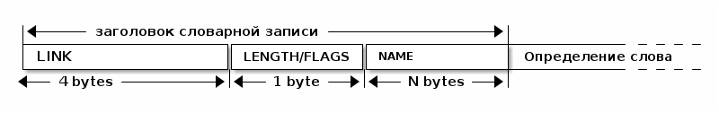
Мы дойдем до определения слова позже. Сейчас просто посмотрите на его заголовок
(dictionary entry / header). Первые 4 байта - это указатель ссылки. Он указывает на
предыдущее слово в словаре, и для первого слова в словаре является указателем
NULL. Затем появляется байт длины/флагов. Длина слова может составлять до 31 символа
(используется 5 бит), а три верхних бита используются для различных флагов, про которые
я расскажу позже. За этим следует само имя, и в этой реализации имя всегда кратно 4
байтам, и первоначально заполнено нулевыми байтами. Это просто для того, чтобы
определение начиналось с 32-битной границы.
Переменная Forth, называемая LATEST, содержит указатель на последнее заданное слово,
другими словами, голову этого связанного списка.
DOUBLE и QUADRUPLE могут выглядеть так::

Вы должны увидеть из этого, как можно реализовать поиск слова в словаре (просто пройти по записям, начинающимся с той, на которую указывает LATEST, и сопоставляя имена, пока вы не найдете совпадение или не наткнетесь на указатель NULL в конце словаря).
И как добавить слово в словарь (создать новое определение, установить его LINK в LATEST и установить LATEST, чтобы он указывал на новое слово). Мы увидим именно эти функции, реализованные в ассемблере позже.
Одним из интересных последствий использования связанного списка является то, что вы можете переопределять слова, и более новое определение слова переопределяет более старое. Это важная концепция в Forth, потому что это означает, что любое слово (даже "встроенные" или "стандартные" слова) могут быть переопределены новым определением, либо для его улучшения, либо для его ускорения или даже для его отключения. Однако из-за того, как компилируются слова Forth, которые вы поймете ниже, слова, определенные с использованием старого определения слова, продолжают использовать старое определение. Только новые слова, определенные после нового определения, используют новое определение.
Прямой шитый код
Теперь мы перейдем к действительно важному, для пониманию Forth, аспекту. Если вы не поймете этот раздел, то вы не поймете как работает Forth, и это будет неудачей с моей стороны.
Давайте поговорим сначала о том, что означает "шитый код". Представьте себе своеобразную версию Cи, где вам разрешено вызывать только функции без аргументов. (Не беспокойтесь, о том, что такой язык будет совершенно бесполезен) Итак, в нашем своеобразном Cи код будет выглядеть так:
f () {
a ();
b ();
c ();
}
…и так далее. Как бы функция, скажем, f выше, была скомпилирована стандартным
компилятором Cи в машинный код? Например для i386 так:
f: CALL a # E8 08 00 00 00 CALL b # E8 1C 00 00 00 CALL c # E8 2C 00 00 00 ;; сейчас мы пока игнорируем возврат из функции
E8 - это машинный код x86 для «CALL» функции. В первые 20 лет компьютерная память
была ужасно дорогой, и мы могли бы беспокоиться о том, что расходуем впустую
память повторенными байтами «E8». Мы можем сэкономить 20% в размере кода (и,
следовательно, дорогостоящей памяти), сжав это:
08 00 00 00 # Просто адреса функций, без CALL 1C 00 00 00 2C 00 00 00
На 16-битной машине, подобной той, на которой Forth был запущен в первый раз, экономия еще больше - 33%.
Историческое примечание: Если модель исполнения, используемая Forth, кажется странной, то она была полностью мотивирована необходимостью экономить память на ранних компьютерах. Это сжатие не так важно сейчас, когда наши машины имеют больше памяти в своих кэшах L1, чем в ранних компьютерах, но модель исполнения по-прежнему обладает некоторыми полезными свойствами. Кроме того, на современных процессорах, Forth-система способна целиком поместиться в кеше процессора, что делает ее прямо таки чудовищно быстрой.
Конечно, этот сжатый код, из которого убраны E8, больше не будет работать
непосредственно на процессоре. Вместо этого нам нужно написать интерпретатор, который
берет каждый адрес и вызывает его.
На машине i386 получается, что этот интерпретатор можно легко написать в двух
ассемблерных инструкциях, которые превращаются всего в 3 байта машинного кода. Давайте
сохраним в регистре %esi указатель на следующее слово для выполнения:

В i386 есть инструкция LODSL (или в терминологии руководств Intel, LODSW). Она
делает две вещи:
- читает из памяти, на которую указывает
%esi4 байта в регистр%eax - увеличивает значение в регистре
%esiна 4
Итак, после выполнения инструкции LODSL ситуация выглядит так:

Сейчас нам надо сделать jmp на адрес, содержащийся в %eax. Это снова всего одна
x86-инструкция, которая записывается как JMP *(%eax). И после того как мы сделаем JMP
ситуация выглядит так:

Для выполнения этой работы каждая подпрограмма сопровождается двумя инструкциями:
LODSL; JMP *(%eax), которые буквально переходят к следующей подпрограмме.
И это подводит нас к нашей первой части реального кода! Ну, то есть, это макрос.
.macro NEXT lodsl jmp *(%eax) .endm
Этот макрос называется NEXT. Это "фортизм". Он раскрывается в эти две инструкции.
Каждый примитив Forth, который мы пишем, должен быть завершен NEXT. Думайте об
этом как о return.
Все, что описано выше, называется прямым шитым кодом.
Подводя итог: мы сжимаем наши вызовы функций до списка адресов и используем макрос,
чтобы переходить к следующей функции в списке. Мы также используем один регистр
(%esi), как своего рода указатель инструкции, указывая на следующую функцию в списке.
Я просто дам вам намек на то, что должно произойти, сказав, что определение Forth, такое как:
: QUADRUPLE DOUBLE DOUBLE ; \ имя: "QUADRUPLE" определение: "DOUBLE DOUBLE"
на самом деле компилирует (не совсем точно, но мы сразу увидим, почему) список адресов функций для DOUBLE, DOUBLE и специальную функцию EXIT для завершения.
На данный момент, остроглазые эксперты ассемблера могут воскликнуть: "вы сделали ошибку!".
Ага, я лгал вам о JMP *(%eax).
Коссвенный шитый код
Оказывается, что прямой шитый код интересен, но только если вы хотите просто
выполнить список функций, написанных на ассемблере. Поэтому QUADRUPLE будет работать
только в том случае, если DOUBLE является функцией языка ассемблера. В прямом шитом
коде QUADRUPLE будет выглядеть так:

Мы можем добавить дополнительный уровень косвенности, позволяющей нам запускать как слова, написанные на ассемблере (примитивы, написанные для скорости), так и слова, написанные на Forth-е, как списки адресов.
Дополнительная косвенность является причиной скобок в JMP *(%eax).
Давайте посмотрим, как QUADRUPLE и DOUBLE действительно выглядят в Forth:

Это та часть, где вам может понадобиться дополнительная чашка кофе. Что изменилось, так
это то, что я добавил дополнительный указатель на начало определения. В Forth это
называют codeword - кодовое слово. codeword является указателем на интерпретатор
для запуска функции. Для примитивов, написанных на языке ассемблера, codeword просто
указывает на сам код - его не нужно интерпретировать, он просто запускается.
В словах, написанных в Forth (например, QUADRUPLE и DOUBLE), кодовое слово указывает на функцию-интерпретатор.
Я вскоре покажу вам функцию-интерпретатор, но давайте вспомним наш косвенный JMP
*(%eax) с "дополнительными" скобками. Возьмем случай, когда мы выполняем DOUBLE, как
показано, и вызывается DUP. Обратите внимание, что %esi указывает на адрес +
Ассемблерный код для DUP в конце делает NEXT. Это:
- читает адрес
+в%eax- теперь%eaxуказывает наcodewordдля кода+ - увеличивает
%esiна 4 - выполняет
jmpна содержимое того адреса, который лежит в%eax→ т.е.jmpпо адресу, лежащему вcodewordслова+, → т.е.jmpна ассемблерный код, реализующий+.

Поэтому я надеюсь, что я убедил вас, что NEXT делает примерно то, что вы
ожидаете. Это коссвенный шитый код.
Я не сказал о четырех вещах. Интересно, сможете ли вы догадаться о них, не читая дальше?
Вот список этих вещей:
- что делает
EXIT? - как происходит вызов функции, т.е. как
%esiначинает указывать на часть QUADRUPLE, а затем указывать на часть DOUBLE? - Что входит в
codewordдля слов, написанных на Forth? - Как компилировать функцию, которая делает что-то еще, кроме вызова других функций,
например функцию, которая содержит число, такую как
: DOUBLE 2 * ;?
Интерпретатор и стек возвратов
Не останавливаясь на этом, давайте поговорим о третьей и второй проблемах, интерпретаторе и стек возврата.
Слова, которые определены в Forth, нуждаются в codeword, которое указывает на
небольшое количество кода, который протягивает им "руку помощи". Им не нужно многого,
но им нужно то, что известно как интерпретатор, хотя на самом деле он не является
интерпретатором в том же смысле, как, например, медленный интерпретатор байт-кода
Java. Этот интерпретатор просто устанавливает несколько машинных регистров, чтобы затем
слово могло выполняться на полной скорости с использованием модели коссвенного шитого
кода, показанной выше.
Одна из вещей, которые должны произойти, когда QUADRUPLE вызывает DOUBLE, заключается в
том, что мы сохраняем старый указатель инструкций %esi и создаем новый, указывающий
на первое слово в DOUBLE. Поскольку нам нужно будет восстановить старый %esi в конце
слова DOUBLE (в конце концов, это как вызов функции), нам понадобится стек для хранения
этих "адресов возврата" (старых значений %esi).
Как вы, наверно видели в документации, Forth имеет два стека, обычный стек параметров
и стек возвратов, который немного загадочен. Но наш стек возвратов - это просто тот
стек, о котором я говорил в предыдущем абзаце, используемый для сохранения %esi когда
из одного слова Forth вызывается другое слово Forth.
В этом Forth мы используем указатель обычного стека (%esp) для стека параметров. Мы
будем использовать другой указатель стека i386 (%ebp, обычно называемый "указателем
фрейма") для стека возвратов.
У меня есть два макроса, которые просто оборачивают детали использования %ebp для
стека возвратов. Вы используете их, например, PUSHRSP %eax (push %eax в стек
возвратов) или POPRSP %ebx (pop значение, на которое указывает вершина стека
возвратов %ebp в регистр %ebx).
.macro PUSHRSP reg lea -4(%ebp), %ebp # push reg в стек возвратов movl \reg, (%ebp) .endm
.macro POPRSP reg mov (%ebp),\reg # pop вершину стека возвратов в reg lea 4(%ebp), %ebp .endm
И с этим мы теперь можем поговорить об интерпретаторе.
В Forth функция-интерпретатор часто называется DOCOL (я думаю, что это означает "DO
COLON", потому что все определения Forth начинаются с двоеточия, как например в
выражении : DOUBLE DUP ;
Интерпретатору (на самом деле это не "интерпретация") нужно push-нуть старый %esi в
стек и установить %esi так, чтобы он указывал на первое слово в определении. Помните,
как мы перешли к функции с помощью JMP *(%eax)? Вследствие этого удобно, что %eax
содержит адрес этого codeword, поэтому просто добавляя к нему 4, мы получаем адрес
первого слова данных. Наконец, после установки %esi, он просто делает NEXT, который
вызывает запуск первого слова.
.text .align 4 DOCOL: PUSHRSP %esi # push %esi on to the return stack addl $4, %eax # %eax points to codeword, so make movl %eax, %esi # %esi point to first data word NEXT
Чтобы это было совершенно ясно, посмотрим, как работает DOCOL при прыжке с QUADRUPLE в DOUBLE:

Во-первых, вызов DOUBLE вызывает DOCOL (кодовое слово DOUBLE). DOCOL делает следующее:
он push-ит старый %esi на стек возвратов. %eax указывает на codeword DOUBLE,
поэтому мы просто добавляем к нему 4, чтобы получить наш новый %esi:
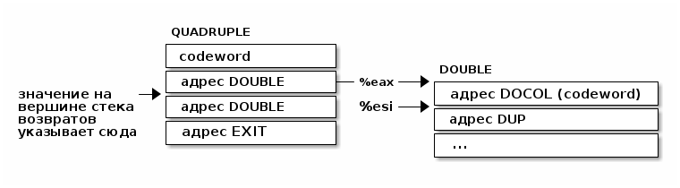
Затем он делает NEXT и так как из-за магии шитого кода, это увеличивает %esi снова,
то вызывается DUP.
Ну, похоже, это работает.
Здесь есть одна второстепенная вещь. Поскольку DOCOL - это первый кусок ассемблерного
кода, который должен быть определен в этом файле (остальные - только макросы), и
поскольку я обычно компилирую этот код с сегментом .text, начинающимся с адреса 0,
DOCOL имеет адрес 0. Поэтому, если вы дизассемблируете код и увидите слово с codeword
0, вы сразу же поймете, что это слово Forth (а не ассемблерный примитив), и поэтому
использует DOCOL в качестве интерпретатора.
Начинаем
Теперь давайте перейдем к гайкам и болтам. Когда мы запускаем программу, нам нужно настроить несколько вещей, таких как стек возвратов. Но как только мы сможем, мы хотим перейти в код Forth (хотя большая часть «раннего» кода Forth все равно должна быть написана как примитивы на host-языке).
Это то, что делает код настройки:
- Делает небольшую вступительную часть
- Настраивает отдельный стек возврата (NB: Linux уже дает нам обычный стек параметров)
- затем сразу переходит к слову Forth, называемому QUIT. Несмотря на свое название QUIT никуда не выходит. Он сбрасывает некоторое внутреннее состояние и начинает чтение и интерпретацию команд. (Причина, по которой он называется QUIT, заключается в том, что вы можете вызывать QUIT из вашего собственного кода Forth, чтобы «выйти» из вашей программы и вернуться к интерпретации).
/* Assembler entry point. */ .text .globl _start _start: cld mov %esp, var_S0 # Save the initial data stack pointer in Forth variable S0. mov $return_stack_top, %ebp # Initialise the return stack. call set_up_data_segment mov $cold_start, %esi # Initialise interpreter. NEXT # Run interpreter! .section .rodata cold_start: # High-level code without a codeword. .int QUIT
Встроенные слова
Помните наши словарные записи? Давайте приведем их вместе с кодовым словом и словами данных, чтобы увидеть, как
: DOUBLE DUP ;
действительно выглядит в памяти.
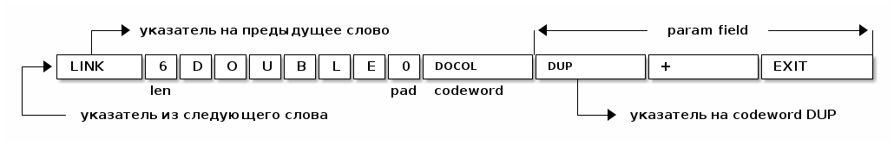
Вначале мы не можем просто написать буквально : DOUBLE DUP; , потому что нам еще пока
нечем читать строку, разбивать ее на пробелы, анализировать каждое слово и.т.д. Поэтому
вместо этого нам придется определять встроенные слова, используя конструкторы данных
ассемблера GNU (например, .int, .byte, .string, .ascii и.т.д.)
.int <указатель на предыдущее слово> .byte 6 # len .ascii "DOUBLE" # name .byte 0 # padding DOUBLE: .int DOCOL # codeword .int DUP # указатель на codeword DUP .int PLUS # указатель на codeword + .int EXIT # указатель на codeword EXIT
Но это быстро утомляет, поэтому я определяю ассемблерный макрос, чтобы я мог просто написать:
defword "DOUBLE",6,,DOUBLE .int DUP,PLUS,EXIT
и получить точно такой же эффект. Не беспокойтесь о деталях реализации этого макроса - он может показаться сложным.
/* Flags - это мы обсудим потом */ .set F_IMMED,0x80 .set F_HIDDEN,0x20 .set F_LENMASK,0x1f # length mask // Store the chain of links. .set link,0 .macro defword name, namelen, flags=0, label .section .rodata .align 4 .globl name_\label name_\label : .int link # link .set link,name_\label .byte \flags+\namelen # flags + байт длины .ascii "\name" # имя .align 4 # выравнивание на 4-х байтовую границу .globl \label \label : .int DOCOL # codeword - указатель на функцию-интепретатор # list of word pointers follow .endm
Таким образом я хочу писать слова, написанные на ассемблере. Мы должны написать некоторое количество базового кода, прежде чем будет достаточно "инфраструктуры", чтобы начать писать слова на Forth, но также я хочу определить некоторые общие слова Forth в языке ассемблера для скорости, хотя я мог бы написать их на Forth.
Вот как DUP выглядит в памяти:
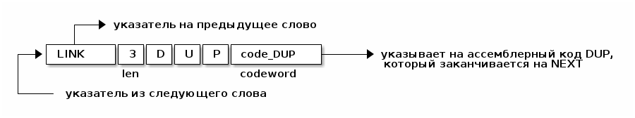
Опять же, для краткости я собираюсь написать макрос ассемблера с именем defcode. Как
и в случае с defword выше, не беспокойтесь о сложных деталях макроса.
.macro defcode name, namelen, flags=0, label .section .rodata .align 4 .globl name_\label name_\label : .int link # link .set link,name_\label .byte \flags+\namelen # flags + байт длины .ascii "\name" # имя .align 4 # выравнивание на 4-х байтовую границу .globl \label \label : .int code_\label # codeword .text //.align 4 .globl code_\label code_\label : # далее следует ассемблерный код .endm
Теперь несколько простых примитивов Forth. Они написаны на ассемблере для скорости. Если вы понимаете язык ассемблера i386, то стоит их прочитать.
defcode "DROP",4,,DROP pop %eax # сбросить верхний элемент стека NEXT defcode "SWAP",4,,SWAP pop %eax # поменять местами два верхних элемента на стеке pop %ebx push %eax push %ebx NEXT defcode "DUP",3,,DUP mov (%esp), %eax # дублировать верхний элемент стека push %eax NEXT defcode "OVER",4,,OVER mov 4(%esp), %eax # взять второй от верха элемент стека push %eax # и положить его копию сверху NEXT defcode "ROT",3,,ROT pop %eax pop %ebx pop %ecx push %ebx push %eax push %ecx NEXT defcode "-ROT",4,,NROT pop %eax pop %ebx pop %ecx push %eax push %ecx push %ebx NEXT defcode "2DROP",5,,TWODROP pop %eax # сбросить два верхних элемента со стека pop %eax NEXT defcode "2DUP",4,,TWODUP mov (%esp), %eax # дублировать два верхних элемента на стеке mov 4(%esp), %ebx push %ebx push %eax NEXT defcode "2SWAP",5,,TWOSWAP pop %eax # поменять местами две пары элементов на стеке pop %ebx pop %ecx pop %edx push %ebx push %eax push %edx push %ecx NEXT defcode "?DUP",4,,QDUP movl (%esp), %eax # дублировать верхний элемент стека если он не нулевой test %eax, %eax jz 1f push %eax 1: NEXT defcode "1+",2,,INCR incl (%esp) # увеличить верхний элемент стека на единицу NEXT defcode "1-",2,,DECR decl (%esp) # уменьшить верхний элемент стека на единицу NEXT defcode "4+",2,,INCR4 addl $4, (%esp) # увеличить верхний элемент стека на 4 NEXT defcode "4-",2,,DECR4 subl $4, (%esp) # уменьшить верхний элемент стека на 4 NEXT defcode "+",1,,ADD pop %eax # взять верхний элемент со стека addl %eax, (%esp) # прибавиь его значение к элементу, который стал верхним NEXT defcode "-",1,,SUB pop %eax # взять верхний элемент со стека subl %eax, (%esp) # вычесть его значение из элемента, который стал верхним верхним NEXT defcode "*",1,,MUL pop %eax # взять со стека верхний элемент pop %ebx # взять со стека следующий верхний элемент imull %ebx, %eax # умножить их друг на друга push %eax # игнорируем переполнение NEXT
В этом Forth только /MOD примитив. Позже мы определим слова / и MOD в терминах
примитива /MOD. Конструкция ассемблерной команды idiv, которая оставляет как частное,
так и остаток, делает этот выбор очевидным.
defcode "/MOD",4,,DIVMOD xor %edx, %edx pop %ebx pop %eax idivl %ebx push %edx # push остаток push %eax # push частное NEXT
Множество сравнительных операций, таких как =, <, >, и.т.д
Стандарт ANSI Forth говорит, что слова сравнения должны возвращать все двоичные разряды
равные единице для TRUE, и все двоичные разряды равные нулю для FALSE. Однако это
немного странное соглашение, поэтому этот Forth не следует ему и возвращает более
нормальное (для программистов на Си) значение 1 для TRUE и 0 для FALSE.
defcode "=",1,,EQU pop %eax # два верхних элемента стека равны? pop %ebx cmp %ebx, %eax sete %al movzbl %al, %eax pushl %eax NEXT defcode "<>",2,,NEQU pop %eax # два верхних элемента стека не равны? pop %ebx cmp %ebx, %eax setne %al movzbl %al, %eax pushl %eax NEXT defcode "<",1,,LT pop %eax pop %ebx cmp %eax, %ebx setl %al movzbl %al, %eax pushl %eax NEXT defcode ">",1,,GT pop %eax pop %ebx cmp %eax, %ebx setg %al movzbl %al, %eax pushl %eax NEXT defcode "<=",2,,LE pop %eax pop %ebx cmp %eax, %ebx setle %al movzbl %al, %eax pushl %eax NEXT defcode ">=",2,,GE pop %eax pop %ebx cmp %eax, %ebx setge %al movzbl %al, %eax pushl %eax NEXT defcode "0=",2,,ZEQU pop %eax # верхний элемент стека равен нулю? test %eax, %eax setz %al movzbl %al, %eax pushl %eax NEXT defcode "0<>",3,,ZNEQU pop %eax # верхний элемент стека не равен нулю? test %eax, %eax setnz %al movzbl %al, %eax pushl %eax NEXT defcode "0<",2,,ZLT pop %eax # comparisons with 0 test %eax, %eax setl %al movzbl %al, %eax pushl %eax NEXT defcode "0>",2,,ZGT pop %eax test %eax, %eax setg %al movzbl %al, %eax pushl %eax NEXT defcode "0<=",3,,ZLE pop %eax test %eax, %eax setle %al movzbl %al, %eax pushl %eax NEXT defcode "0>=",3,,ZGE pop %eax test %eax, %eax setge %al movzbl %al, %eax pushl %eax NEXT defcode "AND",3,,AND pop %eax # битовый AND andl %eax, (%esp) NEXT defcode "OR",2,,OR pop %eax # битовый OR orl %eax, (%esp) NEXT defcode "XOR",3,,XOR pop %eax # битовый XOR xorl %eax, (%esp) NEXT defcode "INVERT",6,,INVERT notl (%esp) # это битовая функция "NOT" (см. NEGATE and NOT) NEXT
Возвращение из форт-слов
Время поговорить о том, что происходит, когда мы делаем EXIT. На этой диаграмме
QUADRUPLE вызывает DOUBLE, и DOUBLE собирается сделать EXIT (посмотрите, куда указывает
%esi)
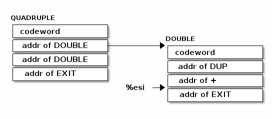
Что происходит, когда функция выполняет NEXT? Выполняется следующий код:
defcode "EXIT",4,,EXIT POPRSP %esi # pop return stack into %esi NEXT
EXIT получает старый %esi, который мы сохранили ранее в стеке возвратов, и помещает
его в %esi. Итак, после этого (но до NEXT) мы получаем:

И NEXT просто завершает работу, в этом случае, просто вызвав DOUBLE снова.
Литералы
Последний момент, который я "замалчивал" раньше, заключался в том, как иметь дело с функциями, которые делают что-либо помимо вызова других функций. Например, предположим, что DOUBLE был определен следующим образом:
: DOUBLE 2 * ;
Он делает то же самое, но как мы его скомпилируем, если он содержит буквально цифру 2?
Одним из способов было бы иметь функцию под названием 2 (которую вы должны были бы
написать на ассемблере), но вам понадобится такая функция для каждого отдельного
литерала, который вы бы хотели использовать.
Forth решает это, компилируя функцию, используя специальное слово LIT:

LIT выполняется обычным способом, но то, что он делает дальше, определенно не
нормально. Он смотрит на %esi (который теперь указывает на число 2), захватывает его
(число 2), кладет его в стек, а затем манипулирует %esi, чтобы пропустить номер, как
если бы он никогда не был там.
Что интересно, так это то, что весь захват и манипуляция может быть выполнена с
использованием одной байтовой команды i386, нашего старого друга LODSL. Вместо того,
чтобы рисовать диаграммы, посмотрите, можете ли вы узнать, как работает LIT:
defcode "LIT",3,,LIT # %esi указывает на следующую команду, но в этом случае это указатель на следующий # литерал, представляющий собой 4 байтовое значение. Получение этого литерала в %eax # и инкремент %esi на x86 - это удобная однобайтовая инструкция! (см. NEXT macro) lodsl # push literal в стек push %eax NEXT
Память
Важным моментом в Forth является то, что он дает вам прямой доступ к самым низким деталям машины. Манипулирование памятью часто осуществляется в Forth, и вот примитивы для этого:
defcode "!",1,,STORE pop %ebx # забираем со стека адрес, куда будем сохранять pop %eax # забираем со стека данные, которые будем сохранять mov %eax, (%ebx) # сохраняем данные по адресу NEXT defcode "@",1,,FETCH pop %ebx # забираем со стека адрес переменной, значение которой надо вернуть mov (%ebx), %eax # выясняем значение по этому адресу push %eax # push-им значение в стек NEXT defcode "+!",2,,ADDSTORE pop %ebx # забираем со стека адрес переменной, которую будем увеличивать pop %eax # забираем значение на которое будем увеличивать addl %eax, (%ebx) # добавляем значение к переменной по этому адресу NEXT defcode "-!",2,,SUBSTORE pop %ebx # забираем со стека адрес переменной, которую будем уменьшать pop %eax # забираем значение на которое будем уменьшать subl %eax, (%ebx) # вычитаем значение из переменной по этому адресу NEXT
! и @ (STORE и FETCH) работают с 32-битными словами. Также полезно иметь
возможность читать и писать байты, поэтому мы также определяем стандартные слова C@ и
C!. Байт-ориентированные операции работают только на архитектуре, которая их
разрешает (i386 является одним из них).
defcode "C!",2,,STOREBYTE pop %ebx # забираем со стека адрес, куда будем сохранять pop %eax # забираем со стека данные, которые будем сохранять movb %al, (%ebx) # сохраняем данные по адресу NEXT defcode "C@",2,,FETCHBYTE pop %ebx # забираем со стека адрес переменной, значение которой надо вернуть xor %eax, %eax # очищаем регистр %eax movb (%ebx), %al # выясняем значение по этому адресу push %eax # push-им значение в стек NEXT # C@C! - это полезный примитив для копирования байт defcode "C@C!",4,,CCOPY movl 4(%esp), %ebx # адрес источника movb (%ebx), %al # получаем байт из источника pop %edi # адрес приемника stosb # копируем байт в приемник push %edi # увеличиваем адрес приемника incl 4(%esp) # увеличиваем адрес источника NEXT # CMOVE - операция копирования блока байтов defcode "CMOVE",5,,CMOVE mov %esi, %edx # сохраним %esi pop %ecx # length pop %edi # адрес приемника pop %esi # адрес источника rep movsb # копируем источник в приемник length раз mov %edx, %esi # восстанавливаем %esi NEXT
Встроенные переменные
Это некоторые встроенные переменные и соответствующие стандартные слова Forth. Из них
единственное, что мы обсуждали до сих пор, было LATEST, что указывает на последнее
(последнее определенное) слово в словаре Forth. LATEST также является словом Forth,
которое выталкивает адрес переменнуй LATEST в стек, поэтому вы можете читать или писать
ее с помощью операторов @ и !. Например, чтобы напечатать текущее значение LATEST
(и это применимо к любой переменной Forth), вы должны:
LATEST @ . CR
Чтобы уменьшить определение переменных, я использую макрос defvar, похожий на
defword и defcode выше. (Фактически, defvar макрос использует defcode для
создания заголовка в словаре).
.macro defvar name, namelen, flags=0, label, initial=0 defcode \name,\namelen,\flags,\label push $var_\name NEXT .data .align 4 var_\name : .int \initial .endm
Встроенные переменные:
- STATE - состояние интерпретации(0) или компиляции слова (отличным от нуля)
- LATEST - указатель на последнее заданное слово в словаре.
- HERE - указатель на следующий свободный байт памяти. При компиляции скомпилированные слова помещаются тут.
- S0 - хранит адрес верхней части стека параметров.
- BASE - текущая база для печати и чтения чисел.
defvar "STATE",5,,STATE defvar "HERE",4,,HERE defvar "LATEST",6,,LATEST,name_SYSCALL0 # SYSCALL0 must be last in built-in dictionary defvar "S0",2,,SZ defvar "BASE",4,,BASE,10
Встроенные константы
Встроенные константы:
- VERSION - это текущая версия этого Forth.
- R0 - адрес вершины стека возвратов.
- DOCOL - Указатель на DOCOL.
- FIMMED - текущее значение флага IMMEDIATE.
- FHIDDEN - Текущее значение флага HIDDEN.
- FLENMASK - Маска длины в flags/len байте
- SYS_ * и числовые коды различных системных вызовов Linux (из <asm/unistd.h>)
//#include <asm-i386/unistd.h> // вам может понадобиться это вместо этого #include <asm/unistd.h> .macro defconst name, namelen, flags=0, label, value defcode \name,\namelen,\flags,\label push $\value NEXT .endm defconst "VERSION",7,,VERSION,JONES_VERSION defconst "R0",2,,RZ,return_stack_top defconst "DOCOL",5,,__DOCOL,DOCOL defconst "F_IMMED",7,,__F_IMMED,F_IMMED defconst "F_HIDDEN",8,,__F_HIDDEN,F_HIDDEN defconst "F_LENMASK",9,,__F_LENMASK,F_LENMASK defconst "SYS_EXIT",8,,SYS_EXIT,__NR_exit defconst "SYS_OPEN",8,,SYS_OPEN,__NR_open defconst "SYS_CLOSE",9,,SYS_CLOSE,__NR_close defconst "SYS_READ",8,,SYS_READ,__NR_read defconst "SYS_WRITE",9,,SYS_WRITE,__NR_write defconst "SYS_CREAT",9,,SYS_CREAT,__NR_creat defconst "SYS_BRK",7,,SYS_BRK,__NR_brk defconst "O_RDONLY",8,,__O_RDONLY,0 defconst "O_WRONLY",8,,__O_WRONLY,1 defconst "O_RDWR",6,,__O_RDWR,2 defconst "O_CREAT",7,,__O_CREAT,0100 defconst "O_EXCL",6,,__O_EXCL,0200 defconst "O_TRUNC",7,,__O_TRUNC,01000 defconst "O_APPEND",8,,__O_APPEND,02000 defconst "O_NONBLOCK",10,,__O_NONBLOCK,04000
Стек возвратов
Эти слова позволяют получить доступ к стеку возвратов. Напомним, что регистр %ebp всегда указывает на вершину стека возвратов.
defcode ">R",2,,TOR pop %eax # pop parameter stack into %eax PUSHRSP %eax # push it on to the return stack NEXT defcode "R>",2,,FROMR POPRSP %eax # pop return stack on to %eax push %eax # and push on to parameter stack NEXT defcode "RSP@",4,,RSPFETCH push %ebp NEXT defcode "RSP!",4,,RSPSTORE pop %ebp NEXT defcode "RDROP",5,,RDROP addl $4, %ebp # pop return stack and throw away NEXT
Стек параметров (данных)
Эти функции позволяют вам управлять стеком параметров. Напомним, что Linux
устанавливает для нас стек параметров, и он доступен через регистр %esp.
defcode "DSP@",4,,DSPFETCH mov %esp, %eax push %eax NEXT defcode "DSP!",4,,DSPSTORE pop %esp NEXT
Ввод и вывод
Это наши первые действительно сложные примитивы Forth. Я решил написать их на ассемблере, но удивительно, что в реальных реализациях Forth они часто пишутся в терминах более фундаментальных примитивов Forth.
Я решил избежать этого, потому что я думаю, что это просто скрывает реализацию. В конце концов, вы можете не понимать ассемблер, но вы можете просто подумать об этом как о непрозрачном блоке кода, который делает то, что он говорит.
Давайте сначала обсудим ввод.
Слово KEY считывает следующий байт из stdin (и push-ит его на стек параметров). Поэтому, если KEY вызывается, и кто-то нажимает на клавишу пробела, то число 32 (ASCII-код пробела) помещается в стек.
В Forth нет различий между чтением кода и чтением ввода. Мы могли бы читать и компилировать код, мы могли бы читать слова для выполнения, мы могли бы попросить пользователя набрать свое имя - в конечном итоге все это происходит через KEY.
Реализация KEY использует входной буфер определенного размера (определенный в конце этого файла). Он вызывает системный вызов Linux read(2) для заполнения этого буфера и отслеживает его положение в буфере с помощью пары переменных, и если у него заканчивается входной буфер, он автоматически заполняет его. Если KEY обнаруживает, что stdin закрыт, он выходит из программы, поэтому, когда вы нажимаете ^D, система Forth полностью завершается.
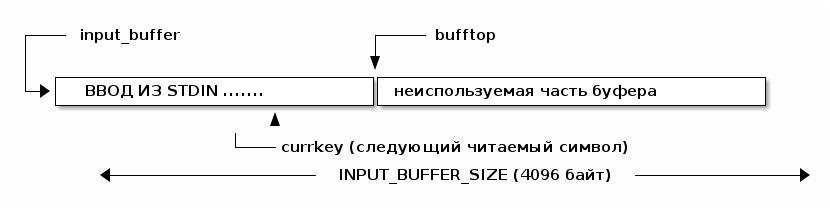
defcode "KEY",3,,KEY call _KEY push %eax # push return value on stack NEXT _KEY: mov (currkey), %ebx cmp (bufftop), %ebx jge 1f # exhausted the input buffer? xor %eax, %eax mov (%ebx), %al # get next key from input buffer inc %ebx mov %ebx,(currkey) # increment currkey ret 1: # Out of input, use read(2) to fetch more input from stdin. xor %ebx, %ebx # 1st param: stdin mov $buffer, %ecx # 2nd param: buffer mov %ecx,currkey mov $BUFFER_SIZE, %edx # 3rd param: max length mov $__NR_read, %eax # syscall: read int $0x80 test %eax, %eax # If %eax <= 0, then exit. jbe 2f addl %eax, %ecx # buffer+%eax = bufftop mov %ecx,bufftop jmp _KEY 2: # Error or end of input: exit the program. xor %ebx, %ebx mov $__NR_exit, %eax # syscall: exit int $0x80 .data .align 4 currkey: # Current place in input buffer (next character to read). .int buffer bufftop: # Last valid data in input buffer + 1. .int buffer
Напротив, выход намного проще. Слово EMIT выводит один байт в stdout. Эта реализация
просто использует системный вызов write. Никакой попытки сделать буфер не
производится, но было бы хорошим упражнением добавить его.
defcode "EMIT",4,,EMIT pop %eax call _EMIT NEXT _EMIT: mov $1, %ebx # 1st param: stdout # write needs the address of the byte to write mov %al, emit_scratch mov $emit_scratch, %ecx # 2nd param: address mov $1, %edx # 3rd param: nbytes = 1 mov $__NR_write, %eax # write syscall int $0x80 ret .data # NB: easier to fit in the .data section emit_scratch: .space 1 # scratch used by EMIT
Вернемся к вводу. WORD - это слово , которое читает следующее полное слово со стандартного ввода. Если подробнее, он сначала пропускает любые пробелы (пробелы, вкладки, символы новой строки и.т.д.). Затем он вызывает KEY, чтобы читать символы во внутреннем буфере, пока не наткнется на пробел. Затем он вычисляет длину прочитанного слова и возвращает адрес и длину как два слова в стеке (с длиной в верхней части стека).
Обратите внимание, что WORD имеет единственный внутренний буфер, который он перезаписывает каждый раз (скорее, как статическая строка в си). Также обратите внимание, что внутренний буфер WORD составляет всего 32 байта, и нет проверки для переполнения. 31 байт - это максимальная длина слова Forth, которое мы поддерживаем, и это то, для чего WORD и используется: чтения слов Forth при компиляции и выполнении кода. Возвращенные строки не заканчиваются NUL.
Начальный адрес и длина строки - это обычный способ представления строк в Forth (не заканчивающийся символом ASCII NUL, как в C), и поэтому строки Forth могут содержать любой символ, включая NUL, и могут быть любой длины.
WORD не подходит для простого считывания строк (например, пользовательского ввода) из-за всех вышеперечисленных особенностей и ограничений.
Обратите внимание, что при выполнении вы увидите:
WORD FOO
который помещает «FOO» и длину 3 в стек, но при компиляции:
: BAR WORD FOO ;
будет ошибка (или, по крайней мере, это не сделает то, что вы можете ожидать). Позже мы
поговорим о компиляции и про режим немедленного исполнения, и вы поймете, почему.
defcode "WORD",4,,WORD call _WORD push %edi # push base address push %ecx # push length NEXT _WORD: # Search for first non-blank character. Also skip \ comments. 1: call _KEY # get next key, returned in %eax cmpb $'\\', %al # start of a comment? je 3f # if so, skip the comment cmpb $' ', %al jbe 1b # if so, keep looking # Search for the end of the word, storing chars as we go. mov $word_buffer, %edi # pointer to return buffer 2: stosb # add character to return buffer call _KEY # get next key, returned in %al cmpb $' ', %al # is blank? ja 2b # if not, keep looping # Return the word (well, the static buffer) and length. */ sub $word_buffer, %edi mov %edi, %ecx # return length of the word mov $word_buffer, %edi # return address of the word ret # Code to skip \ comments to end of the current line. 3: call _KEY cmpb $'\n', %al # end of line yet? jne 3b jmp 1b .data # NB: easier to fit in the .data section # A static buffer where WORD returns. Subsequent calls # overwrite this buffer. Maximum word length is 32 chars. word_buffer: .space 32
Помимо чтения слов, нам нужно будет читать цифры, и для этого мы используем функцию NUMBER. Она анализирует числовую строку, например, возвращаемую WORD, и push-ит число в стек параметров.
эта функция использует переменную BASE в качестве базы (radix) для преобразования, поэтому, например, если BASE равна 2, мы ожидаем двоичное число. Обычно BASE составляет
Если слово начинается с символа '-', тогда возвращаемое значение отрицательно.
Если строка не может быть проанализирована как число (или содержит символы за пределами текущей BASE), тогда нам нужно вернуть индикацию ошибки. Таким образом, NUMBER фактически возвращает два элемента в стеке. В верхней части стека мы возвращаем количество несконвертированных символов (т. Е. Если 0, то все символы были преобразованы, поэтому нет ошибки). Второй элемент от вершины стека - это распарсенное число или частичное значение, если произошла ошибка.
defcode "NUMBER",6,,NUMBER pop %ecx # length of string pop %edi # start address of string call _NUMBER push %eax # parsed number push %ecx # number of unparsed characters (0 = no error) NEXT _NUMBER: xor %eax, %eax xor %ebx, %ebx test %ecx, %ecx # trying to parse a zero-length string is an error, but will return 0. jz 5f movl var_BASE, %edx # get BASE (in %dl) # Check if first character is '-'. movb (%edi), %bl # %bl = first character in string inc %edi push %eax # push 0 on stack cmpb $'-', %bl # negative number? jnz 2f pop %eax push %ebx # push <> 0 on stack, indicating negative dec %ecx jnz 1f pop %ebx # error: string is only '-'. movl $1, %ecx ret # Loop reading digits. 1: imull %edx, %eax # %eax *= BASE movb (%edi), %bl # %bl = next character in string inc %edi # Convert 0-9, A-Z to a number 0-35. 2: subb $'0', %bl # < '0'? jb 4f cmp $10, %bl # <= '9'? jb 3f subb $17, %bl # < 'A'? (17 is 'A'-'0') jb 4f addb $10, %bl 3: cmp %dl, %bl # >= BASE? jge 4f # OK, so add it to %eax and loop. add %ebx, %eax dec %ecx jnz 1b # Negate the result if first character was '-' (saved on the stack). 4: pop %ebx test %ebx, %ebx jz 5f neg %eax 5: ret
Просмотр словаря
Мы подходим к нашей прелюдии о том, как компилируется код Forth, но сначала нам нужно еще немного инфраструктуры.
Слово FIND принимает строку (слово, которое анализируется WORD - см. выше) и находит его его в словаре. Фактически он возвращает адрес заголовка словаря, если он находит его, или 0, в противном случае
Поэтому, если DOUBLE определен в словаре, тогда
WORD DOUBLE FIND
возвращает следующий указатель:

See also >CFA and >DFA.
FIND не находит словарные записи, помеченные как HIDDEN. См. ниже, почему.
defcode "FIND",4,,FIND pop %ecx # %ecx = length pop %edi # %edi = address call _FIND push %eax # %eax = address of dictionary entry (or NULL) NEXT _FIND: push %esi # Save %esi so we can use it in string comparison. # Now we start searching backwards through the dictionary for this word. mov var_LATEST, %edx # LATEST points to name header of the latest word in the dictionary 1: test %edx, %edx # NULL pointer? (end of the linked list) je 4f # Compare the length expected and the length of the word. # Note that if the F_HIDDEN flag is set on the word, then by a bit of trickery # this won't pick the word (the length will appear to be wrong). xor %eax, %eax movb 4(%edx), %al # %al = flags+length field andb $(F_HIDDEN|F_LENMASK), %al # %al = name length cmpb %cl, %al # Length is the same? jne 2f # Compare the strings in detail. push %ecx # Save the length push %edi # Save the address (repe cmpsb will move this pointer) lea 5(%edx), %esi # Dictionary string we are checking against. repe cmpsb # Compare the strings. pop %edi pop %ecx jne 2f # Not the same. # The strings are the same - return the header pointer in %eax pop %esi mov %edx, %eax ret 2: mov (%edx), %edx # Move back through the link field to the previous word jmp 1b # .. and loop. 4: # Not found. pop %esi xor %eax, %eax # Return zero to indicate not found. ret
FIND возвращает указатель словаря, но при компиляции нам нужен указатель кодового слова
(напомним, что определения Forth скомпилированы в списки указателей на
codeword-ы). Стандартное слово >CFA превращает указатель словаря в указатель на
codeword.
В приведенном ниже примере показан результат:
WORD DOUBLE FIND >CFA

NB: поскольку имена различаются по длине, это не просто простое приращение.
В этом Forth вы не можете легко превратить указатель кодового слова обратно в указатель на элемент словаря, но это не так для большинства реализаций Forth, где они хранят обратный указатель в определении (с очевидной стоимостью памяти / сложности).
Причина, по которой они делают это, заключается в том, что это бывает полезно, чтобы быстро декомпилировать определения Forth.
Что означает CFA? Мое лучшее предположение - "Code Field Address"
defcode ">CFA",4,,TCFA pop %edi call _TCFA push %edi NEXT _TCFA: xor %eax, %eax add $4, %edi # Skip link pointer. movb (%edi), %al # Load flags+len into %al. inc %edi # Skip flags+len byte. andb $F_LENMASK, %al # Just the length, not the flags. add %eax, %edi # Skip the name. addl $3, %edi # The codeword is 4-byte aligned. andl $~3, %edi ret
В связи с >CFA рассмотрим >DFA, который берет адрес записи словаря, возвращаемый FIND, и возвращает указатель на первое поле данных.

(Обратите внимание на этот момент, кто знаком с исходным кодом FIG-Forth / ciforth: Это >DFA определение отличается от их, потому что у них есть дополнительная косвенность).
Как легко можно увидеть >DFA легко определяется в Forth, просто путем добавления 4 к результату >CFA.
defword ">DFA",4,,TDFA .int TCFA # >CFA (get code field address) .int INCR4 # 4+ (add 4 to it to get to next word) .int EXIT # EXIT (return from Forth word)
Компиляция
Теперь мы поговорим о том, как Forth компилирует слова. Напомним, что определение слова выглядит следующим образом:
: DOUBLE DUP + ;
и мы должны превратить это в:

Теперь нам нужно решить несколько задач:
- Куда поместить новое слово?
- Как мы читаем слова?
- Как мы определяем слова
:(COLON) и;(SEMICOLON)?
Forth решает это довольно изящно и, как вы можете ожидать, очень низкоуровневым способом, который позволяет вам изменить способ работы компилятора над вашим собственным кодом.
Forth имеет функцию INTERPRET (настоящий интерпретатор на этот раз, а не DOCOL), которая работает в цикле, читая слова (используя WORD), просматривая их (используя FIND), превращая их в указатели кодового слова (используя >CFA) и решая, что с ними делать.
То, что он делает, зависит от режима интерпретатора (в переменной STATE).
Когда STATE равно нулю, интерпретатор просто запускает каждое слово, когда оно находит их. Это называется "немедленным режимом" (immediate mode).
Интересные вещи происходят, когда STATE не равен нулю - "режим компиляции" (compiling
mode). В этом режиме интерпретатор добавляет указатель codeword в
пользовательскую память (переменная HERE указывает на следующий свободный байт
пользовательской памяти - см. Раздел СЕГМЕНТ ДАННЫХ ниже).
Таким образом, вы сможете увидеть, как мы можем определить : (COLON). Общий план:
- (1) Использовать WORD для чтения имени определяемой функции.
- (2) Построить запись словаря - только часть заголовка - в пользовательской памяти:
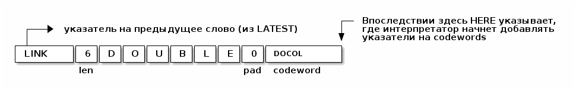
- (3) Установить LATEST, чтобы указать на новое слово, …
- (4) .. и самое главное оставить ЗДЕСЬ, указывая сразу после нового
codeword. Здесь интерпретатор будет добавлять кодовые слова. - (5) Установить STATE в 1. Это вызовет переход в режим компиляции, поэтому интерпретатор начинает добавлять кодовые слова к нашему частично сформированному заголовку.
После того, как : запущен, наш вход находится здесь:
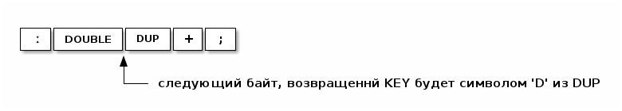
поэтому интерпретатор (теперь он находится в режиме компиляции, поэтому я думаю, что это на самом деле компилятор) читает "DUP", просматривает его в словаре, получает его указатель на кодовое слово и добавляет его.

Затем мы читаем +, получаем указатель его codeword и добавляем его:
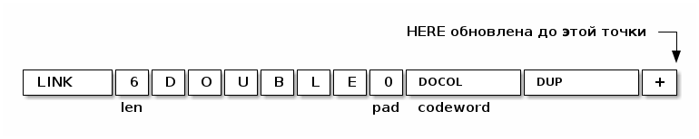
Теперь проблема заключается в следующем. Очевидно, что мы не хотим, чтобы мы читали ;
скомпилировали его и продолжали компилировать все подряд.
На этом этапе Forth использует трюк. Помните, что длина байта в определении словаря не просто байт длины, но также может содержать флаги. Один флаг называется флагом IMMEDIATE (FIMMED в этом коде). Если слово в словаре помечено как IMMEDIATE, тогда интерпретатор запускает его немедленно даже если он находится в режиме компиляции.
Вот как это слово ; (SEMICOLON) работает - как слово, помеченное в словаре как
IMMEDIATE.
Все, что оно делает, - это добавляет кодовое слово для EXIT в текущее определение и возвращает к немедленному режиму (установкой STATE на 0). Вскоре мы увидим его фактическое определение; и мы увидим, что это действительно очень простое определение, объявленное IMMEDIATE.
После чтения интерпретатором ; и выполнения его "немедленно", мы получаем это:

и STATE установлена в 0;
И это вся работа, наше новое определение скомпилировано, и мы вернулись в непосредственный режим, простых чтений и выполнений слов, возможно, включая вызов, чтобы проверить наше новое слово DOUBLE.
Единственная последняя заминка в том, что, хотя пока слово компилируется, оно было в полуготовом состоянии. Мы, разумеется, не хотели бы, чтобы DOUBLE был вызван кем-то в это время. Есть несколько способов сделать это это, но в Forth мы устанавливаем байт длины слова с флагом HIDDEN (F_HIDDEN в этом коде) во время его компиляции. Это предотвращает обнаружение компилируемого слова с помощью FIND и, таким образом, теоретически предотвращает любой шанс его вызова.
Вышеприведенное объясняет, как компилировать : (COLON) и ; (SEMICOLON), и через
мгновение я их определю. Функция: (COLON) может быть сделана немного более общей, если
написать ее в двух частях. Первая часть, называемая CREATE, создает только заголовок:
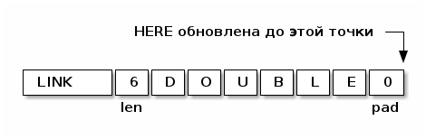
и вторая часть, фактическое определение : (COLON), вызывает CREATE и добавляет кодовое
слово DOCOL:

CREATE является стандартным словом Forth, и преимущество этого разделения состоит в том, что мы можем его повторно использовать для создания других типов слов (а не только тех, которые содержат код, но например и таких, которые содержат переменные, константы и другие данные).
defcode "CREATE",6,,CREATE # Get the name length and address. pop %ecx # %ecx = length pop %ebx # %ebx = address of name # Link pointer. movl var_HERE, %edi # %edi is the address of the header movl var_LATEST, %eax # Get link pointer stosl # and store it in the header. # Length byte and the word itself. mov %cl,%al # Get the length. stosb # Store the length/flags byte. push %esi mov %ebx, %esi # %esi = word rep movsb # Copy the word pop %esi addl $3, %edi # Align to next 4 byte boundary. andl $~3, %edi # Update LATEST and HERE. movl var_HERE, %eax movl %eax, var_LATEST movl %edi, var_HERE NEXT
Поскольку я хочу определить : (COLON) в Forth, а не в ассемблере, нам нужно еще
несколько слов Forth.
Первый - это ~,~ (COMMA), который является стандартным словом Forth, которое добавляет 32-битное целое к пользовательской памяти, на которое указывает HERE, а потом добавляет 4 к HERE. Таким образом, действие ~,~ (COMMA):
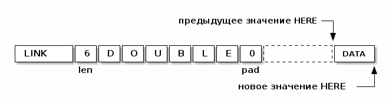
DATA - любое 32-битное значение, которое лежит на вершине стека
~,~ (COMMA) является довольно фундаментальной операцией при компиляции. Он используется
для добавления codeword-ов в текущее слово, которое компилируется.
defcode ",",1,,COMMA pop %eax # Code pointer to store. call _COMMA NEXT _COMMA: movl var_HERE, %edi # HERE stosl # Store it. movl %edi, var_HERE # Update HERE (incremented) ret
Наши определения : (COLON) и ; (SEMICOLON) необходимо будет переключать в режим
компиляции и из него.
Глобальная переменная STATE определяет текущий режим (немедленный или режим
компиляции) и, изменяя эту переменную, мы можем переключаться между этими двумя
режимами.
По различным причинам, которые проявятся позже, Forth определяет два стандартных слова,
называемых [ и ] (LBRAC и RBRAC), которые переключают между этими режимами:
| Слово | Ассемблерное имя | Действие | Эффект |
|---|---|---|---|
| [ | LBRAC | STATE = 0 | Переключение в немедленный режим. |
| ] | RBRAC | STATE = 1 | Переключение в режим компиляции. |
[ (LBRAC) является НЕМЕДЛЕННЫМ (IMMEDIATE) словом. Причина такова: если бы это было
не так и мы находились в режиме компиляции, и интерпретатор увидел [ - тогда он
скомпилировал бы ее, а не выполнил бы ее. И мы никогда не смогли бы вернуться к
немедленному режиму! Поэтому мы помечаем слово как IMMEDIATE, так что даже в режиме
компиляции [ запускается в немедленном режиме, переключая нас обратно в немедленный
режим.
defcode "[",1,F_IMMED,LBRAC xor %eax, %eax movl %eax, var_STATE # Set STATE to 0. NEXT defcode "]",1,,RBRAC movl $1, var_STATE # Set STATE to 1. NEXT
Теперь мы можем определить : (COLON), используя CREATE. Он просто вызывает CREATE,
добавляет DOCOL (как codeword), устанавливает HIDDEN и переходит в режим компиляции.
defword ":",1,,COLON .int WORD # Get the name of the new word .int CREATE # CREATE the dictionary entry / header .int LIT, DOCOL, COMMA # Добавляем DOCOL (как codeword). .int LATEST, FETCH, HIDDEN # Делает слово скрытым (см. ниже для определения). .int RBRAC # Переходим в режим компиляции .int EXIT # Возврат из функции
; (SEMICOLON) также элегантно прост. Обратите внимание на флаг FIMMED.
defword ";",1,F_IMMED,SEMICOLON .int LIT, EXIT, COMMA # Append EXIT (so the word will return). .int LATEST, FETCH, HIDDEN # Переключаем hidden flag (см. ниже для определения). .int LBRAC # Возвращаемся в IMMEDIATE режим. .int EXIT # Возврат из функци
Расширение компилятора
Слова, помеченные IMMEDIATE (FIMMED), предназначены не только для использования компилятором Forth. Вы также можете определить свои собственные слова IMMEDIATE, и это важный аспект при расширении базового Forth, поскольку он позволяет фактически расширять сам компилятор. GCC позволяет вам это делать?
Стандартные слова Forth, такие как IF, WHILE, ~."~ и.т.д., Все написаны как
расширения базового компилятора, и все это IMMEDIATE слова.
Слово IMMEDIATE переключает флаг FIMMED (IMMEDIATE) на последнее определенное слово или на текущее слово, если вы вызываете его в середине определения.
Типичное использование:
: MYIMMEDWORD IMMEDIATE ...definition... ;
но некоторые программисты Forth пишут это вместо этого:
: MYIMMEDWORD ...definition... ; IMMEDIATE
Эти два способа использования эквивалентны в первом приближении.
defcode "IMMEDIATE",9,F_IMMED,IMMEDIATE movl var_LATEST, %edi # LATEST word. addl $4, %edi # Point to name/flags byte. xorb $F_IMMED, (%edi) # Toggle the IMMED bit. NEXT
addr HIDDEN переключает hidden флаг (FHIDDEN) слова, определенного в addr. Чтобы
скрыть последнее заданное слово (используемое выше в : и ; определениях), вы
должны:
LATEST @ HIDDEN
HIDE word переключает флаг названного слова word.
Установка этого флага останавливает поиск слова FIND, поэтому его можно использовать для создания "private" слов. Например, чтобы разбить большое слово на более мелкие части, вы можете сделать:
: SUB1 ... subword ... ; : SUB2 ... subword ... ; : SUB3 ... subword ... ; : MAIN ... defined in terms of SUB1, SUB2, SUB3 ... ; HIDE SUB1 HIDE SUB2 HIDE SUB3
После этого только MAIN "экспортируется" или видимо для остальной части программы.
' (TICK) - это стандартное слово Forth, которое возвращает указатель codeword
следующего слова.
Общее использование:
' FOO ,
это способ добавить codeword FOO к текущему слову, которое мы определяем (это
работает только в компилируемом коде).
Вы, как правило, используете ' в IMMEDIATE словах. Например, альтернативный (и довольно бесполезный) способ определения литерала 2 может быть:
: LIT2 IMMEDIATE ' LIT , \ Добавляет LIT к определяемому в настоящий момент слову 2 , \ Добавляет число 2 к определяемому в настоящий момент слову ;
Таким образом, вы можете сделать:
: DOUBLE LIT2 * ;
(Если вы не понимаете, как работает LIT2, вы должны просмотреть материал о компиляции слов и немедленном режиме).
Это ассемблерное определение ' использует чит, который я скопировал из buzzard92. В результате он работает только в скомпилированном коде. Можно написать версию ' на основе WORD, FIND, >CFA, которая также работает в непосредственном режиме.
defcode "'",1,,TICK lodsl # Получить адрес следующего слова и пропустить его pushl %eax # Push его в стек NEXT
Ветвление
Оказывается, все, что вам нужно для определения циклов, IF-выражений и.т.д. - это два примитива.
BRANCH - безусловная ветвь (эквивалентная команде безусловного перехода ассемблера). 0BRANCH - условная ветвь (переход будет осуществлен, если значение на вершине стека равно нулю).
Диаграмма ниже показывает, как BRANCH работает в некотором мнимом скомпилированном
слове. Когда BRANCH выполняется, %esi начинается с указания на поле смещения
(сравните с LIT выше):

Смещение добавляется в %esi, чтобы создать новый %esi, и результатом является то,
что при выполнении NEXT выполнение продолжается по целевому адресу ветки. Отрицательные
смещения тоже работают, как ожидается.
0BRANCH - это то же самое, за исключением того, что ветвление происходит по условию.
Теперь стандартные FORTH слова, такие как IF, THEN, ELSE, WHILE, REPEAT и т. Д., Могут быть полностью реализованы в FORTH. Это НЕМЕДЛЕННЫЕ слова, которые добавляют различные комбинации BRANCH или 0BRANCH в слово, которое в настоящее время компилируется.
Например, код, написанный следующим образом:
condition-code IF true-part THEN rest-code
компилируется в:
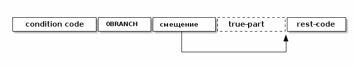
Вот определение:
defcode "BRANCH",6,,BRANCH add (%esi),%esi # add the offset to the instruction pointer NEXT defcode "0BRANCH",7,,ZBRANCH pop %eax test %eax, eax # top of stack is zero? jz code_BRANCH # if so, jump back to the branch function above lodsl # otherwise we need to skip the offset NEXT
Строковые литералы
LITSTRING - это примитив, используемый для реализации операторов ~."~ И ~S"~ (которые написаны в формате FORTH). См. ниже определение этих операторов.
TELL просто печатает строку. Это более эффективно определять в ассемблере, потому что мы можем сделать это одним из системных вызовов Linux.
defcode "LITSTRING",9,,LITSTRING lodsl # get the length of the string push %esi # push the address of the start of the string push %eax # push it on the stack addl %eax,%esi # skip past the string addl $3,%esi # but round up to next 4 byte boundary andl $~3,%esi NEXT defcode "TELL",4,,TELL mov $1,%ebx # 1st param: stdout pop %edx # 3rd param: length of string pop %ecx # 2nd param: address of string mov $__NR_write,%eax # write syscall int $0x80 NEXT
QUIT и INTERPRET
QUIT - первая функция FORTH, вызываемая почти сразу после того, как система FORTH "загружается". Как объяснялось ранее, QUIT никуда не "уходит". Она выполняет некоторую инициализацию (в частности, он очищает возвращаемый стек), и вызывает INTERPRET в цикле для интерпретации команд. Причина, по которой он называется QUIT, заключается в том, что вы можете вызвать его из собственных слов FORTH, чтобы "выйти" из вашей программы и начать снова работать в режиме приема команд от пользователя.
INTERPRET является REPL (см.: http://en.wikipedia.org/wiki/REPL) внутри FORTH.
# QUIT must not return (ie. must not call EXIT). defword "QUIT",4,,QUIT .int RZ,RSPSTORE # R0 RSP!, clear the return stack .int INTERPRET # interpret the next word .int BRANCH,-8 # and loop (indefinitely)
Этот интерпретатор довольно прост, но помните, что в FORTH вы всегда можете переопределить его более мощным!
defcode "INTERPRET",9,,INTERPRET call _WORD # Returns %ecx = length, %edi = pointer to word. # Is it in the dictionary? xor %eax, %eax movl %eax, interpret_is_lit # Not a literal number (not yet anyway ...) call _FIND # Returns %eax = pointer to header or 0 if not found. test %eax, %eax # Found? jz 1f # In the dictionary. Is it an IMMEDIATE codeword? mov %eax, %edi # %edi = dictionary entry movb 4(%edi), %al # Get name+flags. push %ax # Just save it for now. call _TCFA # Convert dictionary entry (in %edi) to codeword pointer. pop %ax andb $F_IMMED, %al # Is IMMED flag set? mov %edi, %eax jnz 4f # If IMMED, jump straight to executing. jmp 2f 1: # Not in the dictionary (not a word) so assume it's a literal number. incl interpret_is_lit call _NUMBER # Returns the parsed number in %eax, %ecx > 0 if error test %ecx, %ecx jnz 6f mov %eax, %ebx mov $LIT, %eax # The word is LIT 2: # Are we compiling or executing? movl var_STATE, %edx test %edx, %edx jz 4f # Jump if executing. # Compiling - just append the word to the current dictionary definition. call _COMMA mov interpret_is_lit, %ecx # Was it a literal? test %ecx, %ecx jz 3f mov %ebx, %eax # Yes, so LIT is followed by a number. call _COMMA 3: NEXT 4: # Executing - run it! mov interpret_is_lit, %ecx # Literal? test %ecx, %ecx # Literal? jnz 5f # Not a literal, execute it now. This never returns, but the codeword will # eventually call NEXT which will reenter the loop in QUIT. jmp *(%eax) 5: # Executing a literal, which means push it on the stack. push %ebx NEXT 6: # Parse error (not a known word or a number in the current BASE). # Print an error message followed by up to 40 characters of context. mov $2, %ebx # 1st param: stderr mov $errmsg, %ecx # 2nd param: error message mov $errmsgend-errmsg, %edx # 3rd param: length of string mov $__NR_write, %eax # write syscall int $0x80 mov (currkey), %ecx # the error occurred just before currkey position mov %ecx, %edx sub $buffer, %edx # %edx = currkey - buffer (length in buffer before currkey) cmp $40, %edx # if > 40, then print only 40 characters jle 7f mov $40, %edx 7: sub %edx, %ecx # %ecx = start of area to print, %edx = length mov $__NR_write, %eax # write syscall int $0x80 mov $errmsgnl, %ecx # newline mov $1, %edx mov $__NR_write, %eax # write syscall int $0x80 NEXT .section .rodata errmsg: .ascii "PARSE ERROR: " errmsgend: errmsgnl: .ascii "\n" .data # NB: easier to fit in the .data section .align 4 interpret_is_lit: .int 0 # Flag used to record if reading a literal
ODDS и ENDS
CHAR помещает код ASCII первого символа следующего слова в стек. Например, CHAR A
кладет 65 в стек.
EXECUTE используется для запуска токенов выполнения. См. обсуждение токенов выполнения в коде FORTH для получения более подробной информации.
SYSCALL0, SYSCALL1, SYSCALL2, SYSCALL3 делают стандартный системный вызов Linux. (См. список номеров системных вызовов). Как видно из названия, эти формы занимают от 0 до 3 параметров syscall, а также номер системного вызова.
В этом FORTH SYSCALL0 должен быть последним словом во встроенном (ассемблерном) словаре, потому что мы инициализируем переменную LATEST, чтобы указать на нее. Это означает, что если вы хотите расширить ассемблерную часть, вы должны поместить новые слова перед SYSCALL0 или изменить способ инициализации LATEST.
defcode "CHAR",4,,CHAR call _WORD # Returns %ecx = length, %edi = pointer to word. xor %eax, %eax movb (%edi), %al # Get the first character of the word. push %eax # Push it onto the stack. NEXT defcode "EXECUTE",7,,EXECUTE pop %eax # Get xt into %eax jmp *(%eax) # and jump to it. # After xt runs its NEXT will continue executing the current word. defcode "SYSCALL3",8,,SYSCALL3 pop %eax # System call number (see <asm/unistd.h>) pop %ebx # First parameter. pop %ecx # Second parameter pop %edx # Third parameter int $0x80 push %eax # Result (negative for -errno) NEXT defcode "SYSCALL2",8,,SYSCALL2 pop %eax # System call number (see <asm/unistd.h>) pop %ebx # First parameter. pop %ecx # Second parameter int $0x80 push %eax # Result (negative for -errno) NEXT defcode "SYSCALL1",8,,SYSCALL1 pop %eax # System call number (see <asm/unistd.h>) pop %ebx # First parameter. int $0x80 push %eax # Result (negative for -errno) NEXT defcode "SYSCALL0",8,,SYSCALL0 pop %eax # System call number (see <asm/unistd.h>) int $0x80 push %eax # Result (negative for -errno) NEXT
Сегмент данных
Здесь мы настраиваем сегмент данных Linux, используемый для пользовательских определений и по-разному известный как "data segment", "user memory" или "user definitions area". Это область памяти, которая растет вверх и хранит как вновь определенные слова FORTH, так и глобальные переменные различного рода.
Это полностью аналогично "кучe" в языке Си, за исключением того, что не существует обобщенного «malloc» и «free» (но, как и все в FORTH, написать такие функции просто было бы простым вопросом программирования). Вместо этого в обычном использовании сегмент данных просто растет вверх, когда к нему добавляются/определяются новые слова FORTH.
Cуществуют различные "возможности" тулчейна GNU, которые делают настройку сегмента данных более сложной, чем это действительно необходимо. Одним из них является GNU-компоновщик, который вставляет случайный "build ID" сегмент . Другим является рандомизация адресного пространства (ASLR), что означает, что мы не можем определить, где ядро поместит сегмент данных (или, например, стека).
Поэтому запись этой ассемблерной процедуры set_up_data_segment немного сложнее, чем
это действительно должно быть. Мы спрашиваем ядро Linux, где начинается сегмент данных,
используя для этого системный вызов brk(2), затем просим зарезервировать некоторое
начальное пространство (также используя brk(2)).
.text .set INITIAL_DATA_SEGMENT_SIZE,65536 set_up_data_segment: xor %ebx, %ebx # Call brk(0) movl $__NR_brk, %eax int $0x80 movl %eax, var_HERE # Initialise HERE to point at beginning of data segment. addl $INITIAL_DATA_SEGMENT_SIZE, %eax # Reserve nn bytes of memory for initial data segment. movl %eax, %ebx # Call brk(HERE+INITIAL_DATA_SEGMENT_SIZE) movl $__NR_brk, %eax int $0x80 ret /* We allocate static buffers for the return static and input buffer (used when reading in files and text that the user types in). */ .set RETURN_STACK_SIZE,8192 .set BUFFER_SIZE,4096 .bss /* FORTH return stack. */ .align 4096 return_stack: .space RETURN_STACK_SIZE return_stack_top: # Initial top of return stack. /* This is used as a temporary input buffer when reading from files or the terminal. */ .align 4096 buffer: .space BUFFER_SIZE
Forth-код
Теперь мы достигли стадии, на которой работает self-hosted FORTH. Все дальнейшие слова могут быть записаны как слова FORTH, включая такие слова, как IF, THEN, и.т.д., которые на большинстве языков будут считаться весьма фундаментальными.
Некоторые примечания о коде:
Я использую отступы для отображения структуры. Количество пробелов не имеет никакого значения для FORTH, кроме того, кроме того, что вы должны использовать по крайней мере один пробельный символ между словами, а сами слова не могут содержать пробелы. FORTH чувствителен к регистру. Используйте CAPS LOCK.
DIVMOD
Примитивное слово /MOD (DIVMOD) оставляет как частное, так и остаток в стеке. (В i386
команда idivl дает оба значения). Теперь мы можем определить / и MOD на основе
/MOD и нескольких других примитивов.
: / /MOD SWAP DROP ; : MOD /MOD DROP ;
Символьные константы
Определим некоторые символьные константы:
: '\n' 10 ; : BL 32 ; \ BL (BLank) стандартное слово для пробела \ CR печатает возврат каретки : CR '\n' EMIT ; \ SPACE печатает пробел : SPACE BL EMIT ; \ NEGATE оставляет на стеке обратное число том, что было на стеке : NEGATE 0 SWAP - ; \ Стандартные слова для булевых значений. : TRUE 1 ; : FALSE 0 ; : NOT 0= ; \ LITERAL берет то, что находится в стеке (<foo>) и компилирует как LIT <foo> : LITERAL IMMEDIATE ' LIT , \ компилирует LIT , \ компилирует сам литерал (из стека) ;
Теперь мы можем использовать [ и ] для вставки литералов, которые вычисляются во
время компиляции. (Вспомните, что [ и ] являются словами FORTH, которые
переключаются в и из непосредственного режима.)
В пределах определений используйте [ … ] LITERAL, где "…" - это константное
выражение, которое вы, скорее всего, вычислите один раз (во время компиляции, чтобы не
вычислять его каждый раз, когда выполняется ваше слово).
: ':' [ \ входим в immediate mode (временно) CHAR : \ push 58 (ASCII code of ":") в стек параметров ] \ переходим назад в compile mode LITERAL \ компилируем LIT 58 как определения ':' слова ;
Еще несколько символьных констант определены так же, как указано выше.
: ';' [ CHAR ; ] LITERAL ; : '(' [ CHAR ( ] LITERAL ; : ')' [ CHAR ) ] LITERAL ; : '"' [ CHAR " ] LITERAL ; : 'A' [ CHAR A ] LITERAL ; : '0' [ CHAR 0 ] LITERAL ; : '-' [ CHAR - ] LITERAL ; : '.' [ CHAR . ] LITERAL ;
COMPILE
При компиляции [ COMPILE ] word компилирует word, в противном случае (при
интерпретации) исполняет его "НЕМЕДЛЕННО".
: [COMPILE] IMMEDIATE WORD \ получить следующее слово FIND \ найти его в словаре >CFA \ получить его codeword , \ и скомпилировать его ;
RECURSE
RECURSE делает рекурсивный вызов текущему слову, которое компилируется.
Обычно, когда слово компилируется, оно помечено как HIDDEN, так что ссылки на одно и то же слово внутри являются вызовами предыдущего определения слова (если таковое есть). Однако у нас все еще есть доступ к слову, которое мы сейчас компилируем с помощью LATEST-указателя, поэтому мы можем использовать его для компиляции рекурсивного вызова.
: RECURSE IMMEDIATE LATEST @ \ LATEST указывает на слово, компилируемое в данный момент >CFA \ получаем codeword , \ компилируем его ;
Управляющие выражения
Пока мы определили только очень простые определения. Прежде чем мы сможем идти дальше,
нам нужно сделать некоторые управляющие структуры, например IF ... THEN и LOOP. К
счастью, мы можем определить произвольные элементы управления структуры
непосредственно в FORTH.
Обратите внимание, что структуры управления, так, как я их определил, будут работать только внутри компилируемых слов. Если вы попытаетесь ввести выражения с использованием IF и.т.д. в непосредственном режиме, то они не будут работать. Выполнение этих операций в непосредственном режиме остается в качестве упражнения для читателя.
Условное выражение вида:
condition IF true-part THEN rest
компилируется в:
condition 0BRANCH OFFSET true-part rest
где OFFSET - это смещение rest
А условное выражение вида:
condition IF true-part ELSE false-part THEN
компилируется в:
condition 0BRANCH OFFSET true-part BRANCH OFFSET2 false-part rest
где OFFSET - это смещение false-part и OFFSET2 - это смещение rest.
IF - это НЕМЕДЛЕННОЕ слово, которое компилирует 0BRANCH, за которым следует фиктивное смещение, и помещает адрес 0BRANCH в стек. Позже, когда мы увидим THEN, мы вытолкнем этот адрес из стека, вычислим смещение и заполним смещение.
: IF IMMEDIATE ' 0BRANCH , \ компилировать 0BRANCH HERE @ \ сохранить позицию смещения в стеке 0 , \ компилировать фиктивное смещение ; : THEN IMMEDIATE DUP HERE @ SWAP - \ рассчитать смещение от адреса сохраненного в стек SWAP ! \ сохранить смещение в заполненом месте ; : ELSE IMMEDIATE ' BRANCH , \ определить ветвь до false-part HERE @ \ сохранить местоположение смещения в стеке 0 , \ компилировать фиктивное смещение SWAP \ теперь заполнить оригинальное (IF) смещение DUP \ то же что и для THEN выше HERE @ SWAP - SWAP ! ;
Циклы
Переходим к циклам:
BEGIN - UNTIL
BEGIN loop-part condition UNTIL
компилируется в:
loop-part condition 0BRANCH OFFSET
где OFFSET указатель обратно на loop-part. Это похоже на следующий пример из Си:
do { loop-part } while (condition)
: BEGIN IMMEDIATE HERE @ \ Сохранить location в стеке ; : UNTIL IMMEDIATE ' 0BRANCH , \ скомпилировать 0BRANCH HERE @ - \ рассчитать смещение от сохраненного адреса в стеке , \ скомпилировать смещение ;
BEGIN - AGAIN
BEGIN loop-part AGAIN
компилируется в:
loop-part BRANCH OFFSET
где OFFSET указатель обратно на loop-part. Другими словами, есконечный цикл, которй
может быть прерван только вызвом EXIT
: AGAIN IMMEDIATE ' BRANCH , \ скомпилировать BRANCH HERE @ - \ вычислить смещение назад , \ скомпилировать смещение ;
BEGIN - WHILE - REPEAT
BEGIN condition WHILE loop-part REPEAT
компилируется в:
condition 0BRANCH OFFSET2 loop-part BRANCH OFFSET
где OFFSET указывает назад на условие (в начало) и OFFSET2 указывает в конец, на позицию после всего фрагмента кода. Это похоже на следующий пример из Си:
while (condition) {
loop-part
}
: WHILE IMMEDIATE ' 0BRANCH , \ компилировать 0BRANCH HERE @ \ сохранить позицию offset2 в стеке 0 , \ компилировать фиктивное смещение offset2 ; : REPEAT IMMEDIATE ' BRANCH , \ компилировать BRANCH SWAP \ взять оригинальное смещение (from BEGIN) HERE @ - , \ и скомпилировать его после BRANCH DUP HERE @ SWAP - \ вычислить offset2 SWAP ! \ и заполнить им оригинальную позицию ;
Unless
UNLESS будет таким же как IF, но тест будет наоборот.
Обратите внимание на использование [COMPILE]: Поскольку IF является IMMEDIATE, мы не хотим, чтобы он выполнялся, пока UNLESS компилируется, но пока UNLESS работает (что случается, когда любое слово, использующее UNLESS, компилируется). Поэтому мы используем [COMPILE] для обращения эффекта, который оказывает маркировка IF как IMMEDIATE. Этот трюк обычно используется, когда мы хотим написать собственные контрольные слова, без необходимости реализовывать их, опираясь на примитивы 0BRANCH и BRANCH, а вместо этого используем более простые управляющие слова, такие как (в данном случае) IF.
: UNLESS IMMEDIATE ' NOT , \ скомпилировать NOT (чтобы обратить test) [COMPILE] IF \ продолжить, вызывав обычный IF ;
Комментарии
FORTH допускает комментарии вида (...) в определениях функций. Это работает путем
вызова IMMEDIATE word (, который просто отбрасывает входные символы до тех пор, пока
не попадет на соответствующий ).
: ( IMMEDIATE 1 \ разрешены вложенные комментарии путем отслеживания глубины BEGIN KEY \ прочесть следующий симво DUP '(' = IF \ открывающая скобка? DROP \ drop ее 1+ \ увеличить глубину ELSE ')' = IF \ закрывающая скобка? 1- \ уменьшить глубину THEN THEN DUP 0= UNTIL \ продолжать пока не достигнем нулевой глубины DROP \ drop счетчик ;
Стековая нотация
В стиле FORTH мы также можем использовать (... - ...), чтобы показать эффекты,
которые имеет слово в стеке параметров. Например:
( n -- )означает, что слово потребляет какое-то целое число (n) параметров из стека.( b a -- c )означает, что слово использует два целых числа (a и b, где a находится на вершине стека) и возвращает одно целое число (c).- (–) означает, что слово не влияет на стек
Некоторые более сложные примеры стека, показывающие нотацию стека:
: NIP ( x y -- y ) SWAP DROP ; : TUCK ( x y -- y x y ) SWAP OVER ; : PICK ( x_u ... x_1 x_0 u -- x_u ... x_1 x_0 x_u ) 1+ ( добавить единицу из-за "u" в стек ) 4 * ( умножить на размер слова ) DSP@ + ( добавить к указателю стека ) @ ( и взять ) ; ( C помощью циклов мы можем теперь написать SPACES, который записывает N пробелов в stdout ) : SPACES ( n -- ) BEGIN DUP 0> ( пока n > 0 ) WHILE SPACE ( напечатать пробел ) 1- ( повторять с уменьшением пока не 0 ) REPEAT DROP ( сбросить счетчик со стека ) ; ( Стандартные слова для манипуляции BASE ) : DECIMAL ( -- ) 10 BASE ! ; : HEX ( -- ) 16 BASE ! ;
Печать чисел
Стандартное слово FORTH . (DOT) очень важно. Он снимает число с вершины стека и
печатает его. Однако сначала я собираюсь реализовать некоторые слова FORTH более
низкого уровня:
U.R( u width – ) печатает беззнаковое число, дополненное определенной ширинойU.( u – ) печатает беззнаковое число.R( n width – ) печатает подписанное число, дополненное определенной шириной.
Например:
-123 6 .R
напечатет такие символы:
<space> <space> - 1 2 3
Другими словами. число дополнено до определенного количества символов.
Полное число печатается, даже если оно шире ширины, и это позволяет нам определить
обычные функции U. и . (мы просто устанавливаем ширину в ноль, зная, что в любом
случае будет напечатано полное число).
Еще одна заминка в функции . и ее друзьях - это то, что они подчиняются текущей базе
в переменной BASE. BASE может быть любым в диапазоне от 2 до 36.
Пока мы определяем . &c мы также можем определить .S который является полезным
инструментом отладки. Это слово печатает текущий стек (не разрушая его) сверху вниз.
Это основное рекурсивное определение U.:
: U. ( u -- ) BASE @ /MOD ( width rem quot ) ?DUP IF ( if quotient <> 0 then ) RECURSE ( print the quotient ) THEN ( печатаем остаток ) DUP 10 < IF '0' ( десятичные цифры 0..9 ) ELSE 10 - ( шестнадцатиричные и другие цифры A..Z ) 'A' THEN + EMIT ;
Слово .S печатает содержимое стека. Оно не меняет стек. Очень полезно для отладки.
: .S ( -- ) DSP@ ( взять текущий стековый указатель ) BEGIN DUP S0 @ < WHILE DUP @ U. ( напечатать элемент из стека ) SPACE 4+ ( двигаться дальше ) REPEAT DROP (сбросить указатель ) ;
Это слово возвращает ширину (в символах) числа без знака в текущей базе
: UWIDTH ( u -- width ) BASE @ / ( rem quot ) ?DUP IF ( if quotient <> 0 then ) RECURSE 1+ ( return 1+recursive call ) ELSE 1 ( return 1 ) THEN ; : U.R ( u width -- ) SWAP ( width u ) DUP ( width u u ) UWIDTH ( width u uwidth ) ROT ( u uwidth width ) SWAP - ( u width-uwidth ) ( В этот момент, если запрошенная ширина уже, у нас будет отрицательное число в стеке. В противном случае число в стеке - это количество пробелов для печати. Но SPACES не будет печатать отрицательное количество пробелов в любом случае, поэтому теперь можно безопасно вызвать SPACES ... ) SPACES ( ... а затем вызвать базовую реализацию U. ) U. ;
.R печатает беззнаковое число, дополненное определенной шириной. Мы не можем просто
распечатать знак и вызвать U.R, потому что мы хотим, чтобы знак был рядом с номером
('-123' а не '- 123').
: .R ( n width -- ) SWAP ( width n ) DUP 0< IF NEGATE ( width u ) 1 ( save a flag to remember that it was negative | width n 1 ) SWAP ( width 1 u ) ROT ( 1 u width ) 1- ( 1 u width-1 ) ELSE 0 ( width u 0 ) SWAP ( width 0 u ) ROT ( 0 u width ) THEN SWAP ( flag width u ) DUP ( flag width u u ) UWIDTH ( flag width u uwidth ) ROT ( flag u uwidth width ) SWAP - ( flag u width-uwidth ) SPACES ( flag u ) SWAP ( u flag ) IF ( was it negative? print the - character ) '-' EMIT THEN U. ;
Наконец, мы можем определить слово . через .R, с оконечными пробелами.
: . 0 .R SPACE ;
Реальный U., с оконечными пробелами.
: U. U. SPACE ;
Это слово выбирает целое число по адресу и печатает его.
: ? ( addr -- ) @ . ;
Еще полезные слова
c a b WITHIN возвращает true если a <= c and c < b
или можно определить его без IF : OVER - >R - R> U<
: WITHIN -ROT ( b c a ) OVER ( b c a c ) <= IF > IF ( b c -- ) TRUE ELSE FALSE THEN ELSE 2DROP ( b c -- ) FALSE THEN ;
DEPTH возвращает глубину стека
: DEPTH ( -- n ) S0 @ DSP@ - 4- ( adjust because S0 was on the stack when we pushed DSP ) ;
ALIGNED берет адрес и округляет его (выравнивает) к следующей границе 4 байта
: ALIGNED ( addr -- addr ) 3 + 3 INVERT AND ( (addr+3) & ~3 ) ;
ALIGN выравнивает указатель HERE, поэтому следующее добавленное слово будет правильно выровнено.
: ALIGN HERE @ ALIGNED HERE ! ;
Строки
~S" string"~ используется в FORTH для определения строк. Это слово оставляет адрес строки и ее длину на вершине стека). Пробел, следующей за ~S"~, является нормальным пробелом между словами FORTH и не является частью строки.
Это сложно определить, потому что он должен делать разные вещи в зависимости от того, компилируем мы или в находимся немедленном режиме. (Таким образом, слово помечено как IMMEDIATE, чтобы оно могло обнаружить это и делать разные вещи).
В режиме компиляции мы добавляем:
LITSTRING <string length> <string rounded up 4 bytes>
к текущему слову. Примитив LITSTRING делает все правильно, когда выполняется текущее слово.
В непосредственном режиме нет особого места для размещения строки, но в этом случае мы помещаем строку по адресу HERE (но мы не изменяем HERE). Это подразумевается как временное местоположение, которое вскоре будет перезаписано.
( C, appends a byte to the current compiled word. ) : C, HERE @ C! ( store the character in the compiled image ) 1 HERE +! ( increment HERE pointer by 1 byte ) ; : S" IMMEDIATE ( -- addr len ) STATE @ IF ( compiling? ) ' LITSTRING , ( compile LITSTRING ) HERE @ ( save the address of the length word on the stack ) 0 , ( dummy length - we don't know what it is yet ) BEGIN KEY ( get next character of the string ) DUP '"' <> WHILE C, ( copy character ) REPEAT DROP ( drop the double quote character at the end ) DUP ( get the saved address of the length word ) HERE @ SWAP - ( calculate the length ) 4- ( subtract 4 (because we measured from the start of the length word) ) SWAP ! ( and back-fill the length location ) ALIGN ( round up to next multiple of 4 bytes for the remaining code ) ELSE ( immediate mode ) HERE @ ( get the start address of the temporary space ) BEGIN KEY DUP '"' <> WHILE OVER C! ( save next character ) 1+ ( increment address ) REPEAT DROP ( drop the final " character ) HERE @ - ( calculate the length ) HERE @ ( push the start address ) SWAP ( addr len ) THEN ;
~."~ является оператором печати строки в FORTH. Пример: ~." Something to print"~ Пробел после оператора - обычный пробел, требуемый между словами, и не является частью того, что напечатано.
В непосредственном режиме мы просто продолжаем читать символы и печатать их, пока не перейдем к следующей двойной кавычки.
В режиме компиляции мы используем ~S"~ для хранения строки, а затем добавляем TELL впоследствии:
LITSTRING <string length> <string rounded up to 4 bytes> TELL
Может быть интересно отметить использование [COMPILE], чтобы превратить вызов в
непосредственное слово ~S"~ в компиляцию этого слова. Он компилирует его в определение ~."~,
а не в определение скомпилированного слова, когда оно выполняется (достаточно сложно для вас?)
: ." IMMEDIATE ( -- ) STATE @ IF ( compiling? ) [COMPILE] S" ( read the string, and compile LITSTRING, etc. ) ' TELL , ( compile the final TELL ) ELSE ( In immediate mode, just read characters and print them until we get to the ending double quote. ) BEGIN KEY DUP '"' = IF DROP ( drop the double quote character ) EXIT ( return from this function ) THEN EMIT AGAIN THEN ;
Константы и переменные
В FORTH глобальные константы и переменные определяются следующим образом:
10 CONSTANT TEN # когда TEN выполняется, он оставляет целое число 10 в стеке VARIABLE VAR # когда VAR выполняется, он оставляет адрес VAR в стеке
Константы можно читать, но не писать, например:
TEN . CR # печатает 10
Вы можете прочитать переменную (в этом примере, называемую VAR), выполнив:
VAR @ # оставляет значение VAR в стеке VAR @ . CR # печатает значение VAR VAR ? CR # как и выше, поскольку ? такой же как @ .
и обновить переменную, выполнив:
20 VAR ! # записывает в VAR число 20
Обратите внимание, что переменные неинициализированы (но см. VALUE позже, в котором инициализированные переменные содержат несколько более простой синтаксис).
CONSTANT
Как мы можем определить слова CONSTANT и VARIABLE?
Трюк заключается в том, чтобы определить новое слово для самой переменной (например,
если переменная называлась "VAR", тогда мы бы определили новое слово под названием
VAR). Это легко сделать, потому что мы открыли создание словарных записей через слово
CREATE (часть определения : выше). Вызов WORD [TEN] CREATE (где [TEN] означает, что
"TEN" является следующим введенным словом) создает запись словаря:
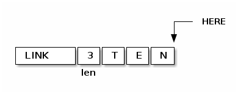
Для CONSTANT мы можем продолжить это, просто добавив DOCOL (как codeword), затем LIT,
за которым следует сама константа, а затем EXIT, образуя небольшое определение слова,
которое возвращает константу:
Обратите внимание, что это определение слова точно такое же, как и у вас, если бы вы написали
: TEN 10 ;
Примечание для людей, читающих код ниже: DOCOL - это постоянное слово, которое мы определили в ассемблерной части , которая возвращает значение символа ассемблера с тем же именем.
: CONSTANT WORD ( получить имя имя следует за CONSTANT ) CREATE ( создать заголовок элемента словаря ) DOCOL , ( добавить DOCOL как codeword поля слова ) ' LIT , ( добавить codeword LIT ) , ( добавить значение, которое лежит на вершине стека ) ' EXIT , ( добавить codeword EXIT ) ;
VARIABLE
VARIABLE немного сложнее, потому что нам нужно где-то вставить переменную. Нет ничего особенного в пользовательской памяти (область памяти, на которую указывает HERE, где мы ранее только хранили новые определения слов). Мы можем вырезать кусочки этой области памяти, чтобы сохранить что угодно, поэтому одно возможное определение VARIABLE может создать это:

Чтобы сделать это более общим, давайте определим пару слов, которые мы можем использовать для выделения произвольной памяти из пользовательской памяти.
Первое из них - ALLOT, где n ALLOT выделяет n байтов памяти. (Обратите внимание,
что при вызове ALLOT очень хорошая идея, убедиться, что n кратно 4, или, по крайней
мере, в следующий раз, когда слово скомпилировано, что HERE осталось кратным 4).
: ALLOT ( n -- addr ) HERE @ SWAP ( here n ) HERE +! ( добавляем n к HERE, после этого старое значение остается на стеке ) ;
Второе важное слово - Во-вторых, CELLS. В FORTH выражение n CELLS ALLOT означает
выделение n integer-ов любого размера - это натуральный размер для integer в этой
машинной архитектуре. На этой 32-битной машине CELLS просто умножает вершину стека
на 4.
: CELLS ( n -- n ) 4 * ;
Итак, теперь мы можем легко определить переменную во многом так же, как и CONSTANT выше. См. схему выше, чтобы увидеть, как будет выглядеть слово, которое создает VARIABLE.
: VARIABLE 1 CELLS ALLOT ( выделить 4 байтовую ячейку для integer памяти, push указатель на нее ) WORD CREATE ( создать элемент словаря, имя которого следует за VARIABLE ) DOCOL , ( добавить DOCOL как поле codeword этого слова ) ' LIT , ( добавить codeword LIT ) , ( добавить указатель на новое имя ) ' EXIT , ( добавить codeword EXIT ) ;
VALUE
VALUE похожи на VARIABLE, но с более простым синтаксисом. Вы обычно используете их, когда вам нужна переменная, которая часто читается, а записывается нечасто.
20 VALUE VAL \ создаем VAL и инициализируем ее значением 20 VAL \ push-им значение переменной VAL (20) в стек 30 TO VAL \ изменяем VAL, устанавливае ее в 30 VAL \ push-им новое значение переменной VAL (30) в стек
Обратите внимание, что «VAL» сам по себе не возвращает адрес значения, а само значение, делая значения более понятными и понятными для использования, чем переменные (без косвенности через «@»). Цена представляет собой более сложную реализацию, хотя, несмотря на сложность, во время исполнения нет штрафа за производительность.
Наивная реализация "TO" была бы довольно медленной, каждый раз ей приходилось бы искать в словаре. Но поскольку это FORTH, мы имеем полный контроль над компилятором, чтобы мы могли более эффективно компилировать TO, превращая:
TO VAL
в
LIT <addr> !
и вычислить <addr> (адрес значения) во время компиляциии
Теперь это довольно умно. Мы скомпилируем наше значение следующим образом:

где <value> - это фактическое значение. Обратите внимание, что когда VAL выполняется, он будет выталкивать значение в стек, чего мы и хотим.
Но что будет использовать для адреса <addr>? Разумеется, указатель на этот <value>:

Другими словами, это своего рода самомодифицирующийся код.
(Замечение для людей, которые хотят изменить этот FORTH, чтобы добавить инлайнинг: значения, определенные таким образом, не могут быть заинлайнены).
: VALUE ( n -- ) WORD CREATE ( создаем заголовок элемента словаря - имя следует за VALUE) DOCOL , ( добавляем DOCOL ) ' LIT , ( добавляем codeword LIT ) , ( добавляем начальное значение ) ' EXIT , ( добавляем codeword EXIT ) ; : TO IMMEDIATE ( n -- ) WORD ( получаем имя VALUE ) FIND ( ищем его в словаре ) >DFA ( получаем указатель на первое поле данных -'LIT' ) 4+ ( увеличиваем его значение на размер данных ) STATE @ IF ( компиляция? ) ' LIT , ( да, компилировать LIT ) , ( компилировать адрес значения ) ' ! , ( компилировать ! ) ELSE ( нет, immediate mode ) ! ( обновить сразу ) THEN ;
x +TO VAL добавляет x к VAL
: +TO IMMEDIATE WORD ( получаем имя значения ) FIND ( ищем в словаре ) >DFA ( получаем указатель на первое поле данных -'LIT' ) 4+ ( увеличиваем его значение на размер данных ) STATE @ IF ( компиляция? ) ' LIT , ( да, компилировать LIT ) , ( компилировать адрес значения ) ' +! , ( компилировать +! ) ELSE ( нет, immediate mode ) +! ( обновить сразу ) THEN ;
Печать словаря
ID. берет адрес словаря и печатает имя слова.
Например: LATEST @ ID. распечатает имя последнего определенного слова
: ID. 4+ ( перепрыгиваем через указатель link ) DUP C@ ( получаем байт flags/length ) F_LENMASK AND ( маскируем flags - мы хотим просто получить длину ) BEGIN DUP 0> ( длина > 0? ) WHILE SWAP 1+ ( addr len -- len addr+1 ) DUP C@ ( len addr -- len addr char | получаем следующий символ ) EMIT ( len addr char -- len addr | и печатаем его ) SWAP 1- ( len addr -- addr len-1 | вычитаем единицу из длины ) REPEAT 2DROP ( len addr -- ) ;
WORD word FIND ?HIDDEN возвращает true, если слово word помечено как скрытое.
WORD word FIND ?IMMEDIATE возвращает true, если слово word помечен как
"немедленное".
WORDS печатает все слова, определенные в словаре, начиная с самого последнего слова.
Однако оно не печатает скрытые слова. Реализация просто двигается назад от LATEST с
помощью ссылок-указателей.
: WORDS LATEST @ ( начинаем с LATEST указателя ) BEGIN ?DUP ( полка указатель не null ) WHILE DUP ?HIDDEN NOT IF ( игнорируем скрытые слова ) DUP ID. ( если не скрытое, то печатаем слово ) SPACE THEN @ ( dereference link - идем к следующему слову ) REPEAT CR ;
Забывание
До сих пор мы только выделяли память для слов. FORTH обеспечивает довольно примитивный метод освобождения.
FORGET word удаляет определение «слова» из словаря и всего, что определено после
него, включая любые переменные и другую память, выделенную после.
Реализация очень проста - мы просматриваем слово (которое возвращает адрес записи словаря). Затем мы устанавливаем HERE, чтобы указывать на этот адрес, так что все будущие распределения и определения будут перезаписывать память, начиная с него. Нам также необходимо установить LATEST, чтобы указать на предыдущее слово.
Обратите внимание: вы не можете FORGET встроенные слова (ну, вы можете попробовать, но это, вероятно, вызовет segfault).
XXX: Поскольку мы написали VARIABLE, чтобы сохранить переменную в памяти, выделенную до слова, в текущей реализации VARIABLE FOO FORGET FOO приведет к утечке одной ячейки памяти.
: FORGET WORD FIND ( найти слов и получить его dictionary entry address ) DUP @ LATEST ! ( установить LATEST на указатель предыдущего слова ) HERE ! ( и сохранить HERE как dictionary address ) ;
Дамп
DUMP используется для выгрузки содержимого памяти в "традиционном" формате hexdump.
Обратите внимание, что параметры DUMP (адрес, длина) совместимы со строковыми словами,
такими как WORD и S".
Вы можете выгрузить исходный код для последнего слова, которое вы определили, выполнив что-то вроде:
LATEST @ 128 DUMP
Вот реализация:
: DUMP ( addr len -- ) BASE @ -ROT ( save the current BASE at the bottom of the stack ) HEX ( and switch to hexadecimal mode ) BEGIN ?DUP ( while len > 0 ) WHILE OVER 8 U.R ( print the address ) SPACE ( print up to 16 words on this line ) 2DUP ( addr len addr len ) 1- 15 AND 1+ ( addr len addr linelen ) BEGIN ?DUP ( while linelen > 0 ) WHILE SWAP ( addr len linelen addr ) DUP C@ ( addr len linelen addr byte ) 2 .R SPACE ( print the byte ) 1+ SWAP 1- ( addr len linelen addr -- addr len addr+1 linelen-1 ) REPEAT DROP ( addr len ) ( print the ASCII equivalents ) 2DUP 1- 15 AND 1+ ( addr len addr linelen ) BEGIN ?DUP ( while linelen > 0) WHILE SWAP ( addr len linelen addr ) DUP C@ ( addr len linelen addr byte ) DUP 32 128 WITHIN IF ( 32 <= c < 128? ) EMIT ELSE DROP '.' EMIT THEN 1+ SWAP 1- ( addr len linelen addr -- addr len addr+1 linelen-1 ) REPEAT DROP ( addr len ) CR DUP 1- 15 AND 1+ ( addr len linelen ) TUCK ( addr linelen len linelen ) - ( addr linelen len-linelen ) >R + R> ( addr+linelen len-linelen ) REPEAT DROP ( restore stack ) BASE ! ( restore saved BASE ) ;
Case
CASE ... ENDCASE - это то, как мы делаем switch в FORTH. Для этого нет общего
согласованного синтаксиса, поэтому я реализовал синтаксис, предусмотренный стандартом
ISO FORTH (ANS-FORTH).
( some value on the stack ) CASE test1 OF ... ENDOF test2 OF ... ENDOF testn OF ... ENDOF ... ( default case ) ENDCASE
Оператор CASE проверяет значение в стеке, проверяя его на равенство с test1, test2, …, testn и выполняет соответствующий фрагмент кода внутри OF … ENDOF. Если ни одно из тестовых значений не совпадает, выполняется случай по умолчанию. Внутри … случая по умолчанию значение все еще находится в верхней части стека (оно неявно DROP-нется с помощью ENDCASE). Когда ENDOF выполняется, он перескакивает после ENDCASE (т. e. Отсутствует 2провал" и нет необходимости в операторе break, как в C).
default case может быть опущен. Фактически tests также могут быть опущены, так что у вас будет только default case, хотя это, вероятно, не очень полезно.
Пример (предполагая, что «q» и т. Д. - это слова, которые push-ат значение ASCII-кода буквы в стек):
0 VALUE QUIT 0 VALUE SLEEP KEY CASE 'q' OF 1 TO QUIT ENDOF 's' OF 1 TO SLEEP ENDOF ( default case: ) ." Sorry, I didn't understand key <" DUP EMIT ." >, try again." CR ENDCASE
В некоторых версиях FORTH поддерживаются более продвинутые tests, такие как диапазоны и.т.д. В других версиях FORTH вам нужно написать OTHERWISE, чтобы указать default case. Как я сказал выше, этот FORTH пытается следовать стандарту ANS FORTH.
Реализация CASE … ENDCASE несколько нетривиальна. Я следовал этой реализации: http://www.uni-giessen.de/faq/archiv/forthfaq.case_endcase/msg00000.html (в данный момент недоступна)
Общий план состоит в том, чтобы скомпилировать код как ряд операторов IF:
CASE \ (push 0 on the immediate-mode parameter stack) test1 OF ... ENDOF \ test1 OVER = IF DROP ... ELSE test2 OF ... ENDOF \ test2 OVER = IF DROP ... ELSE testn OF ... ENDOF \ testn OVER = IF DROP ... ELSE ... ( default case )... ENDCASE \ DROP THEN [THEN [THEN ...]]
Оператор CASE push-ит 0 на стек параметров в "немедленном" режиме, и это число используется для подсчета количества инструкций THEN, которые нам нужны, когда мы получаем ENDCASE, чтобы каждый IF имел соответствующий THEN. Подсчет делается неявно. Если вы помните из реализации выше IF, каждый IF push-ит адрес кода в стеке в немедленном режиме, и эти адреса не равны нулю, поэтому к тому времени, когда мы дойдем до ENDCASE, стек содержит некоторое количество ненулевых элементов, а затем нуль. Число ненулевых чисел - это сколько раз IF был вызван, поэтому сколько же раз мы должны сделать соответствующий THEN.
Этот код использует [COMPILE], чтобы мы скомпилировали вызовы IF, ELSE, THEN, а не вызывали их во время компиляции слов ниже.
Как и во всех наших структурах управления, они работают только в определениях слов, а не в непосредственном режиме.
: CASE IMMEDIATE 0 ( push 0 to mark the bottom of the stack ) ; : OF IMMEDIATE ' OVER , ( compile OVER ) ' = , ( compile = ) [COMPILE] IF ( compile IF ) ' DROP , ( compile DROP ) ; : ENDOF IMMEDIATE [COMPILE] ELSE ( ENDOF is the same as ELSE ) ; : ENDCASE IMMEDIATE ' DROP , ( compile DROP ) ( keep compiling THEN until we get to our zero marker ) BEGIN ?DUP WHILE [COMPILE] THEN REPEAT ;
Декомпилятор
CFA> является противоположностью >CFA. Он принимает codeword и пытается найти
подходящее определение словаря. (По правде говоря, он работает с любым указателем на
слово, а не только c указателем на codeword, и это необходимо для выполнения
трассировки стека).
В этом FORTH это не так просто. Фактически нам приходится искать через словарь, потому
что у нас нет удобного обратного указателя (как это часто бывает в других версиях
FORTH). Из-за этого поиска CFA> не следует использовать, когда производительность
критична, поэтому она используется только для инструментов отладки, таких как
декомпилятор и печать стек-трейсов.
Это слово возвращает 0, если ничего не находит
: CFA> LATEST @ ( start at LATEST dictionary entry ) BEGIN ?DUP ( while link pointer is not null ) WHILE 2DUP SWAP ( cfa curr curr cfa ) < IF ( current dictionary entry < cfa? ) NIP ( leave curr dictionary entry on the stack ) EXIT THEN @ ( follow link pointer back ) REPEAT DROP ( restore stack ) 0 ( sorry, nothing found ) ;
SEE декомпилирует слово FORTH.
Мы ищем dictionary entry слова, затем снова ищем опять для следующего слова (фактически, конец
скомпилированного слова). Это приводит к двум указателям:

С этой информацией мы можем декомпилировать слово. Нам нужно узнавать "мета-слова", такие как LIT, LITSTRING, BRANCH и.т.д. И обрабатывать их особенным образом.
: SEE WORD FIND ( find the dictionary entry to decompile ) ( Now we search again, looking for the next word in the dictionary. This gives us the length of the word that we will be decompiling. (Well, mostly it does). ) HERE @ ( address of the end of the last compiled word ) LATEST @ ( word last curr ) BEGIN 2 PICK ( word last curr word ) OVER ( word last curr word curr ) <> ( word last curr word<>curr? ) WHILE ( word last curr ) NIP ( word curr ) DUP @ ( word curr prev (which becomes: word last curr) ) REPEAT DROP ( at this point, the stack is: start-of-word end-of-word ) SWAP ( end-of-word start-of-word ) ( begin the definition with : NAME [IMMEDIATE] ) ':' EMIT SPACE DUP ID. SPACE DUP ?IMMEDIATE IF ." IMMEDIATE " THEN >DFA ( get the data address, ie. points after DOCOL | end-of-word start-of-data ) ( now we start decompiling until we hit the end of the word ) BEGIN ( end start ) 2DUP > WHILE DUP @ ( end start codeword ) CASE ' LIT OF ( is it LIT ? ) 4 + DUP @ ( get next word which is the integer constant ) . ( and print it ) ENDOF ' LITSTRING OF ( is it LITSTRING ? ) [ CHAR S ] LITERAL EMIT '"' EMIT SPACE ( print S"<space> ) 4 + DUP @ ( get the length word ) SWAP 4 + SWAP ( end start+4 length ) 2DUP TELL ( print the string ) '"' EMIT SPACE ( finish the string with a final quote ) + ALIGNED ( end start+4+len, aligned ) 4 - ( because we're about to add 4 below ) ENDOF ' 0BRANCH OF ( is it 0BRANCH ? ) ." 0BRANCH ( " 4 + DUP @ ( print the offset ) . ." ) " ENDOF ' BRANCH OF ( is it BRANCH ? ) ." BRANCH ( " 4 + DUP @ ( print the offset ) . ." ) " ENDOF ' ' OF ( is it ' (TICK) ? ) [ CHAR ' ] LITERAL EMIT SPACE 4 + DUP @ ( get the next codeword ) CFA> ( and force it to be printed as a dictionary entry ) ID. SPACE ENDOF ' EXIT OF ( is it EXIT? ) ( We expect the last word to be EXIT, and if it is then we don't print it because EXIT is normally implied by ;. EXIT can also appear in the middle of words, and then it needs to be printed. ) 2DUP ( end start end start ) 4 + ( end start end start+4 ) <> IF ( end start | we're not at the end ) ." EXIT " THEN ENDOF ( default case: ) DUP ( in the default case we always need to DUP before using ) CFA> ( look up the codeword to get the dictionary entry ) ID. SPACE ( and print it ) ENDCASE 4 + ( end start+4 ) REPEAT ';' EMIT CR 2DROP ( restore stack ) ;
Токены выполнения
Стандарт FORTH определяет концепцию, называемую "токеном выполнения" (или "xt"), которая очень похожа на указатель функции в Си. Мы сопоставляем токен выполнения с адресом кодового слова.

Существует один ассемблерный примитив для выполнения токенов, EXECUTE (xt -), который
их запускает.
Вы можете сделать токен выполнения для существующего слова длинным путем, используя
>CFA, то есть: WORD [foo] FIND >CFA будет push-ить xt для foo в стек, где
foo - следующее введенное слово. Таким образом, очень медленный способ запуска DOUBLE
может быть:
: DOUBLE DUP + ; : SLOW WORD FIND >CFA EXECUTE ; 5 SLOW DOUBLE . CR \ prints 10
Мы также предлагаем более простой и быстрый способ получить токен выполнения любого слова FOO:
['] FOO
Домашнее задание:
- (1) Какая разница между
[']FOO и ~' FOO~? - (2) Как соотносятся ~'~,
[']иLIT?
Более полезным является определение анонимных слов и/или присваивание переменным токенов выполнения (xt).
Чтобы определить анонимное слово (и запушить его xt в стеке), используйте: NONAME
...; как в этом примере:
:NONAME ." anon word was called" CR ; \ push-ит xt в стек DUP EXECUTE EXECUTE \ выполянет анонимное слово дважды
Параметры в стеке тоже работают должным образом:
:NONAME ." called with parameter " . CR ; DUP 10 SWAP EXECUTE \ напечатает 'called with parameter 10' 20 SWAP EXECUTE \ напечатает 'called with parameter 20'
Обратите внимание, что вышеупомянутый код создает утечку памяти: анонимное слово все еще компилируется в сегмент данных, поэтому, даже если вы потеряете отслеживание xt, слово продолжает занимать память. Хороший способ отслеживания xt и, таким образом, избежать утечки памяти - назначить его CONSTANT, VARIABLE или VALUE:
0 VALUE ANON :NONAME ." anon word was called" CR ; TO ANON ANON EXECUTE ANON EXECUTE
Еще одно использование :NONAME - создание массива функций, которые можно быстро
вызвать (подумайте о быстром switch например). Этот пример адаптирован из стандарта
ANS FORTH:
10 CELLS ALLOT CONSTANT CMD-TABLE : SET-CMD CELLS CMD-TABLE + ! ; : CALL-CMD CELLS CMD-TABLE + @ EXECUTE ; :NONAME ." alternate 0 was called" CR ; 0 SET-CMD :NONAME ." alternate 1 was called" CR ; 1 SET-CMD \ etc... :NONAME ." alternate 9 was called" CR ; 9 SET-CMD 0 CALL-CMD 1 CALL-CMD
Итак, реализуем :NONAME и [']:
: :NONAME 0 0 CREATE ( create a word with no name - we need a dictionary header because ; expects it ) HERE @ ( current HERE value is the address of the codeword, ie. the xt ) DOCOL , ( compile DOCOL (the codeword) ) ] ( go into compile mode ) ; : ['] IMMEDIATE ' LIT , ( compile LIT ) ;
Исключения
Удивительно, но исключения могут быть реализованы непосредственно в FORTH, на самом деле довольно легко.
Общее использование:
: FOO ( n -- ) THROW ; : TEST-EXCEPTIONS 25 ['] FOO CATCH \ execute 25 FOO, catching any exception ?DUP IF ." called FOO and it threw exception number: " . CR DROP \ we have to drop the argument of FOO (25) THEN ; \ prints: called FOO and it threw exception number: 25
CATCH запускает токен выполнения и определяет, выбрасывает ли оно какое-либо исключение или нет. Стековая сигнатура CATCH довольно сложна:
( a_n-1 ... a_1 a_0 xt -- r_m-1 ... r_1 r_0 0 ) \ если xt не выбрасывает exception ( a_n-1 ... a_1 a_0 xt -- ?_n-1 ... ?_1 ?_0 e ) \ если xt выбрасывает exception 'e'
где ai и ri - это (произвольное число) аргументов и содержимое стека возврата до и
после того, как xt выполнен с помощью EXECUTE. Обратите внимание, в частности, на
такой случай: когда генерируется исключение, указатель стека восстанавливается так, что
в стеке есть n из something в позициях, где раньше были аргументы a_i. Мы
действительно не гарантируем, что находится в стеке - возможно, исходные аргументы а,
возможно, какая-то другая ерунда - это во многом зависит от реализации слова, которое
выполнялось.
THROW, ABORT и еще несколько других исключений.
Номера исключений - это целые числа, отличные от нуля. По условным обозначениям положительные числа могут использоваться для особых приложений, а отрицательные числа имеют определенные значения, определенные в стандарте ANS FORTH. (Например, -1 - это исключение, вызванное ABORT).
0 THROW ничего не делает. Вот стековая сигнатура THROW:
( 0 -- ) ( * e -- ?_n-1 ... ?_1 ?_0 e ) \ the stack is restored to the state \ from the corresponding CATCH
Реализация зависит от определений CATCH и THROW и состояния, разделяемого между ними.
До этого момента стек возврата состоял только из списка адресов возврата, причем
вершина возвращаемого стека была обратным адресом, где мы возобновляем выполнение,
когда текущее слово делает EXIT. Однако CATCH будет push-ить более сложный фрейм стека
исключений в стек возврата. Фрейм стека исключений записывает некоторые вещи о
состоянии выполнения в момент вызова CATCH.
Когда THROW вызывается, он идет вверх по стеку возврата (этот процесс называется "раскруткой"), пока не найдет фрейм стека исключений. Затем он использует данные в кадре стека исключений, чтобы восстановить состояние, позволяющее продолжить выполнение после соответствующего CATCH. (Если он разматывает стек и не находит фрейм стека исключений, он печатает сообщение и возвращается к приглашению, что также является нормальным поведением для так называемых "непойманных исключений").
Это то, как выглядит фрейм стека исключений. (Как обычно, стек возвратов показан
вниз, от более младших до более старших адресов памяти, а растет он вверх).

EXCEPTION-MARKER отмечает эту запись как фрейм стека исключений, а не обычный обратный адрес, и именно это THROW "замечает", поскольку оно разматывает стек. (Если вы хотите внедрить более сложные исключения, такие как TRY … WITH, тогда вам нужно будет использовать другое значение маркера, если вы хотите, чтобы старые маркеры фреймов стека и новые исключения сосуществовали).
Что произойдет, если исполняемое слово не выбрасывает исключение? Он, в конце концов, вернется и вызовет EXCEPTION-MARKER, поэтому EXCEPTION-MARKER лучше сделать что-то разумное без необходимости изменения EXIT. Это красиво дает нам подходящее определение EXCEPTION-MARKER, а именно функцию, которая просто отбрасывает кадр стека и сама возвращается (таким образом, "возвращается" из исходного CATCH).
Из этого следует, что исключения - относительно легкий механизм в FORTH.
: EXCEPTION-MARKER RDROP ( drop the original parameter stack pointer ) 0 ( there was no exception, this is the normal return path ) ; : CATCH ( xt -- exn? ) DSP@ 4+ >R ( save parameter stack pointer (+4 because of xt) on the return stack ) ' EXCEPTION-MARKER 4+ ( push the address of the RDROP inside EXCEPTION-MARKER ... ) >R ( ... on to the return stack so it acts like a return address ) EXECUTE ( execute the nested function ) ; : THROW ( n -- ) ?DUP IF ( only act if the exception code <> 0 ) RSP@ ( get return stack pointer ) BEGIN DUP R0 4- < ( RSP < R0 ) WHILE DUP @ ( get the return stack entry ) ' EXCEPTION-MARKER 4+ = IF ( found the EXCEPTION-MARKER on the return stack ) 4+ ( skip the EXCEPTION-MARKER on the return stack ) RSP! ( restore the return stack pointer ) ( Restore the parameter stack. ) DUP DUP DUP ( reserve some working space so the stack for this word doesn't coincide with the part of the stack being restored ) R> ( get the saved parameter stack pointer | n dsp ) 4- ( reserve space on the stack to store n ) SWAP OVER ( dsp n dsp ) ! ( write n on the stack ) DSP! EXIT ( restore the parameter stack pointer, immediately exit ) THEN 4+ REPEAT ( No matching catch - print a message and restart the INTERPRETer. ) DROP CASE 0 1- OF ( ABORT ) ." ABORTED" CR ENDOF ( default case ) ." UNCAUGHT THROW " DUP . CR ENDCASE QUIT THEN ; : ABORT ( -- ) 0 1- THROW ; ( Print a stack trace by walking up the return stack. ) : PRINT-STACK-TRACE RSP@ ( start at caller of this function ) BEGIN DUP R0 4- < ( RSP < R0 ) WHILE DUP @ ( get the return stack entry ) CASE ' EXCEPTION-MARKER 4+ OF ( is it the exception stack frame? ) ." CATCH ( DSP=" 4+ DUP @ U. ( print saved stack pointer ) ." ) " ENDOF ( default case ) DUP CFA> ( look up the codeword to get the dictionary entry ) ?DUP IF ( and print it ) 2DUP ( dea addr dea ) ID. ( print word from dictionary entry ) [ CHAR + ] LITERAL EMIT SWAP >DFA 4+ - . ( print offset ) THEN ENDCASE 4+ ( move up the stack ) REPEAT DROP CR ;
Строки языка Си
Строки FORTH представлены начальным адресом и длиной, хранящейся в стеке или в памяти.
Большинство FORTH-ов не обрабатывают строки Си, но мы нуждаемся в них, чтобы получить доступ к аргументам процесса и окружающей среде, оставленным в стеке ядром Linux, и сделать некоторые системные вызовы.
| Операция | Input | Output | FORTH word | Notes |
|---|---|---|---|---|
| Создание FORTH-строк | addr len | S" …" | ||
| Создание C-строк | c-addr | Z" …" | ||
| C -> FORTH | c-addr | addr len | DUP STRLEN | |
| FORTH -> C | addr len | c-addr | CSTRING | Аллоцируются во |
| временном буфере | ||||
| и должны быть | ||||
| использованы или | ||||
| скопированы сразу. | ||||
| И не должны | ||||
| содержать NULs |
Например, DUP STRLEN TELL печатает строку C.
Z" …" очень похожа на S" …" за исключением того, что строка заканчивается символом ASCII NUL.
Чтобы сделать его более похожим на строку C, во время выполнения Z" просто оставляет адрес строки в стеке (а не адрес и длину, как ~S"~) Чтобы реализовать это, нам нужно добавить дополнительный NUL в строку, а затем инструкцию DROP. Кроме этого, эта реализация является лишь модифицированной S".
: Z" IMMEDIATE STATE @ IF ( compiling? ) ' LITSTRING , ( compile LITSTRING ) HERE @ ( save the address of the length word on the stack ) 0 , ( dummy length - we don't know what it is yet ) BEGIN KEY ( get next character of the string ) DUP '"' <> WHILE HERE @ C! ( store the character in the compiled image ) 1 HERE +! ( increment HERE pointer by 1 byte ) REPEAT 0 HERE @ C! ( add the ASCII NUL byte ) 1 HERE +! DROP ( drop the double quote character at the end ) DUP ( get the saved address of the length word ) HERE @ SWAP - ( calculate the length ) 4- ( subtract 4 (because we measured from the start of the length word) ) SWAP ! ( and back-fill the length location ) ALIGN ( round up to next multiple of 4 bytes for the remaining code ) ' DROP , ( compile DROP (to drop the length) ) ELSE ( immediate mode ) HERE @ ( get the start address of the temporary space ) BEGIN KEY DUP '"' <> WHILE OVER C! ( save next character ) 1+ ( increment address ) REPEAT DROP ( drop the final " character ) 0 SWAP C! ( store final ASCII NUL ) HERE @ ( push the start address ) THEN ; : STRLEN ( str -- len ) DUP ( save start address ) BEGIN DUP C@ 0<> ( zero byte found? ) WHILE 1+ REPEAT SWAP - ( calculate the length ) ; : CSTRING ( addr len -- c-addr ) SWAP OVER ( len saddr len ) HERE @ SWAP ( len saddr daddr len ) CMOVE ( len ) HERE @ + ( daddr+len ) 0 SWAP C! ( store terminating NUL char ) HERE @ ( push start address ) ;
Окружение
Linux делает аргументы процесса и переменные окружения доступными нам в стеке.
Указатель вершины стека сохраняется ранним ассемблерным кодом при запуске FORTH в переменной S0, и начиная с этого указателя мы можем прочитать аргументы командной строки и переменные окружения.
Начав с S0, сам S0 указывает на argc (количество аргументов командной строки).
S0+4 указывает на argv[ 0 ], S0+8 указывает на argv[ 1 ] etc до argv[ argc-1 ].
argv[ argc ] это NULL указатель
После этого стек содержит переменные окружения - набор указателей на строки формы NAME=VALUE до тех пор, пока мы не перейдем к другому указателю NULL.
Первое слово, которое мы определяем, ARGC, push-ит количество аргументов командной
строки (обратите внимание, что как и в случае с Сишным argc, это включает в себя имя
программы).
: ARGC S0 @ @ ;
n ARGV получаетет "энный" аргумент командной строки
Например, чтобы напечатать имя программы, вы сделали бы:
0 ARGV TELL CR
Вот реализация
: ARGV ( n -- str u ) 1+ CELLS S0 @ + ( get the address of argv[n] entry ) @ ( get the address of the string ) DUP STRLEN ( and get its length / turn it into a FORTH string ) ;
ENVIRON возвращает адрес первой строки переменных окружения. Список строк заканчивается указателем NULL.
Например, чтобы напечатать первую строку переменных окружения, вы могли бы сделать:
ENVIRON @ DUP STRLEN TELL
Реализация:
: ENVIRON ( -- addr ) ARGC ( number of command line parameters on the stack to skip ) 2 + ( skip command line count and NULL pointer after the command line args ) CELLS ( convert to an offset ) S0 @ + ( add to base stack address ) ;
Системные вызовы и файлы
Различные слова, связанные с системными вызовами, и стандартный доступ к файлам.
BYE вызывается, вызывая системный вызов выхода Linux (2).
: BYE ( -- ) 0 ( return code (0) ) SYS_EXIT ( system call number ) SYSCALL1 ;
UNUSED возвращает количество ячеек, оставшихся в пользовательской памяти (в сегменте данных).
Для нашей реализации мы будем использовать системный вызов Linux brk (2), чтобы узнать конец сегмента данных и вычесть HERE из него.
: GET-BRK ( -- brkpoint ) 0 SYS_BRK SYSCALL1 ( call brk (0) ) ; : UNUSED ( -- n ) GET-BRK ( get end of data segment according to the kernel ) HERE @ ( get current position in data segment ) - 4 / ( returns number of cells ) ;
MORECORE увеличивает сегмент данных на указанное количество (4-х байтовых) ячеек.
NB. Количество запрошенных ячеек должно быть, как правило, кратным 1024. Причина в том, что Linux не может расширить сегмент данных менее чем на одну страницу (4096 байт или 1024 ячейки).
Этот FORTH автоматически не увеличивает размер сегмента данных "по запросу" (т.е. Когда используются (COMMA), ALLOT, CREATE и.т.д.). Вместо этого программист должен знать, сколько места займет большое выделение, провеить UNUSED и вызвать MORECORE, если это необходимо. Простым упражнением для читаетеля является изменение реализации сегмента данных, так что MORECORE вызывается автоматически, если программе требуется больше памяти.
: BRK( brkpoint -- ) SYS_BRK SYSCALL1 ; : MORECORE( cells -- ) CELLS GET-BRK + BRK ;
Стандарт FORTH предоставляет некоторые простые примитивы доступа к файлам, которые мы моделируем поверх системных вызовов Linux.
Главным осложнением является преобразование строк FORTH (адрес и длина) в строки Си для ядра Linux.
Обратите внимание, что в этой реализации нет буферизации.
: R/O ( -- fam ) O_RDONLY ; : R/W ( -- fam ) O_RDWR ; : OPEN-FILE ( addr u fam -- fd 0 (if successful) | c-addr u fam -- fd errno (if there was an error) ) -ROT ( fam addr u ) CSTRING ( fam cstring ) SYS_OPEN SYSCALL2 ( open (filename, flags) ) DUP ( fd fd ) DUP 0< IF ( errno? ) NEGATE ( fd errno ) ELSE DROP 0 ( fd 0 ) THEN ; : CREATE-FILE ( addr u fam -- fd 0 (if successful) | c-addr u fam -- fd errno (if there was an error) ) O_CREAT OR O_TRUNC OR -ROT ( fam addr u ) CSTRING ( fam cstring ) 420 -ROT ( 0644 fam cstring ) SYS_OPEN SYSCALL3 ( open (filename, flags|O_TRUNC|O_CREAT, 0644) ) DUP ( fd fd ) DUP 0< IF ( errno? ) NEGATE ( fd errno ) ELSE DROP 0 ( fd 0 ) THEN ; : CLOSE-FILE ( fd -- 0 (if successful) | fd -- errno (if there was an error) ) SYS_CLOSE SYSCALL1 NEGATE ; : READ-FILE ( addr u fd -- u2 0 (if successful) | addr u fd -- 0 0 (if EOF) | addr u fd -- u2 errno (if error) ) >R SWAP R> ( u addr fd ) SYS_READ SYSCALL3 DUP ( u2 u2 ) DUP 0< IF ( errno? ) NEGATE ( u2 errno ) ELSE DROP 0 ( u2 0 ) THEN ; \ PERROR prints a message for an errno, similar to C's perror (3) but we don't have the extensive \ list of strerror strings available, so all we can do is print the errno. : PERROR ( errno addr u -- ) TELL ':' EMIT SPACE ." ERRNO=" . CR ;
Это всего лишь схема простого ассемблера, позволяющая писать примитивы FORTH на языке ассемблера прямо изнутри Fort-а
Ассемблерные примитивы начинаются с : NAME обычным способом, но заканчиваются
~":CODE.~
;CODE обновляет заголовок так, что кодовое слово не является DOCOL, а указывает
вместо этого на собранный код (в части DFA слова).
Мы предоставляем удобный макрос NEXT (вы догадались, что он делает). Однако вам не нужно использовать его, потому что CODE поместит NEXT в конец вашего слова.
Остальное состоит из некоторых непосредственных слов, которые расширяются в машинный код, прилагаемый к определению слова. Только крошечная часть сборки сборки i386 покрыта, достаточно, чтобы написать несколько ассемблерных примитивов ниже.
HEX ( Equivalent to the NEXT macro ) : NEXT IMMEDIATE AD C, FF C, 20 C, ; : ;CODE IMMEDIATE [COMPILE] NEXT ( end the word with NEXT macro ) ALIGN ( machine code is assembled in bytes so isn't necessarily aligned at the end ) LATEST @ DUP HIDDEN ( unhide the word ) DUP >DFA SWAP >CFA ! ( change the codeword to point to the data area ) [COMPILE] [ ( go back to immediate mode ) ; ( The i386 registers ) : EAX IMMEDIATE 0 ; : ECX IMMEDIATE 1 ; : EDX IMMEDIATE 2 ; : EBX IMMEDIATE 3 ; : ESP IMMEDIATE 4 ; : EBP IMMEDIATE 5 ; : ESI IMMEDIATE 6 ; : EDI IMMEDIATE 7 ; ( i386 stack instructions ) : PUSH IMMEDIATE 50 + C, ; : POP IMMEDIATE 58 + C, ; ( RDTSC instruction ) : RDTSC IMMEDIATE 0F C, 31 C, ; DECIMAL \ RDTSC is an assembler primitive which reads the Pentium timestamp counter (a very fine- \ grained counter which counts processor clock cycles). Because the TSC is 64 bits wide \ we have to push it onto the stack in two slots. : RDTSC ( -- lsb msb ) RDTSC ( writes the result in %edx:%eax ) EAX PUSH ( push lsb ) EDX PUSH ( push msb ) ;CODE
INLINE может использоваться для встраивания примитива ассемблера в текущее (ассемблерное) слово.
Например:
: 2DROP INLINE DROP INLINE DROP ;CODE
построит эффективное ассемблерное слово 2DROP, которое содержит встроенный код ассемблерной команды для DROP, за которым следует DROP (например, два 'pop %eax' инструкции в этом случае).
Другой пример. Рассмотрим это обычное определение FORTH:
: C@++ ( addr -- addr+1 byte ) DUP 1+ SWAP C@ ;
(это эквивалентно операции Си '*p++' где p - указатель на char). Если вы заметили, что все слова, используемые для определения C@++, на самом деле являются ассемблерными примитивами, то мы можем писать быстрейшее (но эквивалентное) определение:
: C@++ INLINE DUP INLINE 1+ INLINE SWAP INLINE C@ ;CODE
Интересно отметить, что этот "конкатенативный" стиль программирования позволяет писать на ассемблере переносимым образом. Вышеприведенное определение будет работать для любой архитектуры процессора.
Для успешного использования INLINE необходимо выполнить несколько условий:
- (1) В настоящее время вы должны определить слово ассемблера (т.е.
: ... ;CODE). - (2) Слово, в котором вы находитесь, должно быть известно как ассемблерное слово. Если вы попытаетесь вставить слово FORTH, вы получите сообщение об ошибке.
- (3) Ассемблерный примитив должен быть позиционно-независимым и должен заканчиваться одним NEXT макросом.
Упражнения для читателя:
- (a) Обобщите INLINE, чтобы он мог вставлять слова FORTH при построении слов FORTH.
- (b) Дальнейшее обобщение INLINE, чтобы оно делало что-то разумное, когда вы пытаетесь встроить FORTH в ассемблер и наоборот.
Реализация INLINE довольно проста. Мы находим слово в словаре, проверяем его как ассемблерное слово, а затем копируем его в текущее определение байтом за байтом, пока не достигнем макроса NEXT (который не копируем).
HEX : =NEXT ( addr -- next? ) DUP C@ AD <> IF DROP FALSE EXIT THEN 1+ DUP C@ FF <> IF DROP FALSE EXIT THEN 1+ C@ 20 <> IF FALSE EXIT THEN TRUE ; DECIMAL ( (INLINE) is the lowlevel inline function. ) : (INLINE) ( cfa -- ) @ ( remember codeword points to the code ) BEGIN ( copy bytes until we hit NEXT macro ) DUP =NEXT NOT WHILE DUP C@ C, 1+ REPEAT DROP ; : INLINE IMMEDIATE WORD FIND ( find the word in the dictionary ) >CFA ( codeword ) DUP @ DOCOL = IF ( check codeword <> DOCOL (ie. not a FORTH word) ) ." Cannot INLINE FORTH words" CR ABORT THEN (INLINE) ; HIDE =NEXT
Заметка
DOES> невозможно реализовать с помощью этого FORTH, потому что у нас нет отдельного указателя данных.
Приветствие
Это слово печатает версию и "ok":
: WELCOME S" TEST-MODE" FIND NOT IF ." JONESFORTH VERSION " VERSION . CR UNUSED . ." CELLS REMAINING" CR ." OK " THEN ;
Резюме
WELCOME HIDE WELCOME